TSLA 日内报告
历史数据库：每日收盘后追加当日报告，历史日期永久保留。
（待补充 Junk-man 当日 #junkman-analysis 原文）
5 分钟 K 线 × 3DTE heatmap
3DTE，夜航社 78 档 5 分钟快照；白点为每档现货位置
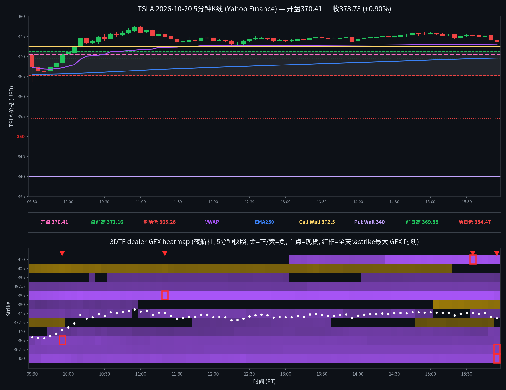
heatmap解读（3DTE，夜航社 78 档 5 分钟快照）
3DTE全天78档5分钟快照（09:30–15:55 ET）。开盘 370.41，收 373.73（+0.90%），盘前高/低 371.16/365.26。
- 早盘(09:30) 现价 366.74：上方强节点 372.5(+0.6M), 397.5(+0.3M), 405(+0.9M), 415(+0.3M), 460(+0.3M)；下方强节点 310(+0.4M), 312.5(+0.5M), 332.5(+0.5M), 340(+0.3M)；负gamma带 360(-3.8M), 362.5(-2.7M), 385(-5.3M)。
- 节点强度大变化（首→末）：380 -1.2M→+1.2M（+204%）；350 -1.1M→+0.8M（+179%）；330 +0.2M→-1.2M（-644%）；357.5 -1.4M→+0.0M（+100%）；345 -1.0M→+0.0M（+100%）；405 +0.9M→+0.0M（-100%）。
- 尾盘(15:55) 现价 373.62：强正节点 312.5(+0.4M), 325(+0.3M), 350(+0.8M), 355(+0.5M), 377.5(+0.8M), 380(+1.2M), 397.5(+0.4M), 412.5(+0.4M), 420(+1.1M), 435(+0.4M)；负gamma带 360(-4.7M), 362.5(-3.0M), 385(-5.8M), 410(-5.5M)。
全天最大节点 TOP5
① · 11:20
385
-6.8M
一、385（负 gamma 加速带，峰值 -6.8M）：全天变化——从 -5.3M 到 -6.8M（约6,759,959倍）；影响时段——11:20 ET 达到峰值，当时现货约 375.11；影响方式（初稿）——价格进入后波动放大、加速通过，以实际 K 线为准。
② · 15:35
410
-5.8M
二、410（负 gamma 加速带，峰值 -5.8M）：全天变化——从 -3.5M 到 -5.8M（约5,831,688倍）；影响时段——15:35 ET 达到峰值，当时现货约 375.18；影响方式（初稿）——价格进入后波动放大、加速通过，以实际 K 线为准。
③ · 15:55
360
-4.7M
三、360（负 gamma 加速带，峰值 -4.7M）：全天变化——从 -3.8M 到 -4.7M（约4,674,088倍）；影响时段——15:55 ET 达到峰值，当时现货约 373.62；影响方式（初稿）——价格进入后波动放大、加速通过，以实际 K 线为准。
④ · 09:55
365
-3.2M
四、365（负 gamma 加速带，峰值 -3.2M）：全天变化——从 -2.2M 到 -3.2M（约3,171,100倍）；影响时段——09:55 ET 达到峰值，当时现货约 370.39；影响方式（初稿）——价格进入后波动放大、加速通过，以实际 K 线为准。
⑤ · 15:55
362.5
-3.0M
五、362.5（负 gamma 加速带，峰值 -3.0M）：全天变化——从 -2.7M 到 -3.0M（约2,979,429倍）；影响时段——15:55 ET 达到峰值，当时现货约 373.62；影响方式（初稿）——价格进入后波动放大、加速通过，以实际 K 线为准。
亮度口径：p99 截断 6.4M；红框 = 全天该 strike 最大 |GEX| 时刻。
资金流（3DTE，全天0笔；premium≥$20万｜size≥50｜DTE≤1｜side=B/M/A）
（当日无符合筛子的 flow 记录，或数据未拉取到）
全天0笔：call ask $0.00M / call bid $0.00M，put ask $0.00M / put bid $0.00M，mid $0.00M（不计入主动买卖）；主动资金中性。
分析总结
① ；全天 377.59–363.64，收 373.73（+0.90%）。
② 白点轨迹：开 370.41 → 高 377.59 → 低 363.64 → 收 373.73。
③ 早盘(09:30) 现价 366.74：上方强节点 372.5(+0.6M), 397.5(+0.3M), 405(+0.9M), 415(+0.3M), 460(+0.3M)；下方强节点 310(+0.4M), 312.5(+0.5M), 332.5(+0.5M), 340(+0.3M)；负gamma带 360(-3.8M), 362.5(-2.7M), 385(-5.3M)。
④ 资金流：全天0笔：call ask $0.00M / call bid $0.00M，put ask $0.00M / put bid $0.00M，mid $0.00M（不计入主动买卖）；主动资金中性。
heatmap 亮度=平方根连续渐变（p99 裁剪）；K线=Yahoo Finance 5分钟；heatmap=夜航社 dealer-GEX 5分钟快照；页面为收盘后静态快照，不实时更新行情。
收盘后的静态快照；页面不在打开时更新行情。
早盘分析
07:21 MDT｜Alpha夜航社 #junkman-analysis｜作者 junk_man（APP徽章）
（盘前预测·情况未发生；以下为逐字原文，未改写）
━━━━━━━━━━━━━━━━━━━━
⚡ TSLA
💵盘前参考价 355.4 | 🟢正 GEX | 钉住/均值回归
🔴360 CALL WALL 下方 | 🟣355 MAGNET 区域内
🟢350 PUT WALL 上方 | 🔵352.3 FLIP 上方
🎯交易区间 350–360 | 上墙延伸 360–365
📊IV 预期振幅 | 🔥高波动 | IV 34.3% (1DTE) | 1σ 预计振幅 ±6.75 (±1.90%) | 波动区间 348.65–362.15
🛟潜在低点观察区 352.5–355 (非最低价预测)；若失守 352.5，取消本轮接底，等重新收复 355 并回踩。
🧭开盘分支 | 若开在 355 下方：反抽不过，先看 352.5；357.5 上方：回踩守住，先看 360；两者之间或贴近边界，等待确认。
🎯交易机会
• 📈回踩 Call：收复 357.5、回踩守住 → 360；失守 357.5 取消。
• 🚀突破 Call：站稳 360、回踩有效 → 362.5 → 365；跌破回踩低点退出。365 再站稳，才看 367.5 → 370。
• 📉受阻 Put：360 受阻，再失守 357.5 → 355 → 352.5；站稳 360 取消。
• 🔻破位 Put：跌破 355、反抽不过 → 352.5 → 350；收回 355 取消。
• 🛟抄底 Call：下探 352.5–355 后重新收复 355、回踩守住 → 357.5 → 360；再破回踩低点退出，不接持续下跌。
盘前预测 · 情况未发生
5 分钟 K 线 × 0DTE heatmap
0DTE，夜航社 78 档 5 分钟快照；白点为每档现货位置
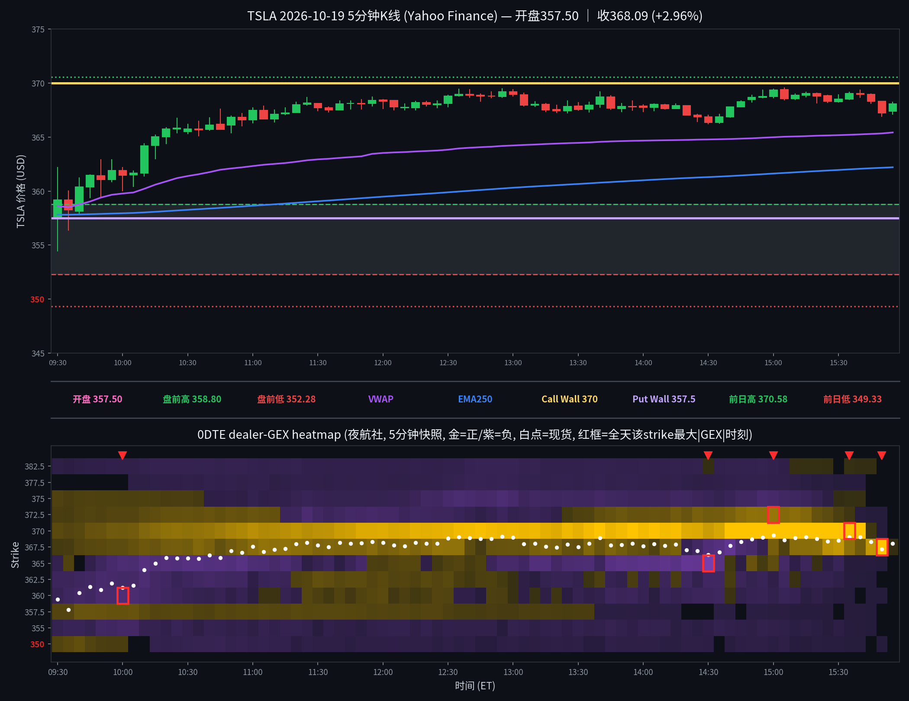
heatmap解读（0DTE，夜航社 78 档 5 分钟快照）
0DTE全天78档5分钟快照（09:30–15:55 ET）。开盘 357.5，收 368.09（+2.96%），盘前高/低 358.8/352.28。
- 早盘(09:30) 现价 359.39：上方强节点 370(+7.2M), 372.5(+2.7M), 375(+4.0M), 380(+2.1M)；下方强节点 345(+2.3M), 350(+4.7M), 357.5(+5.1M)；负gamma带 360(-3.8M), 362.5(-5.9M)。
- 节点强度大变化（首→末）：370 +7.2M→+0.0M（-100%）；362.5 -5.9M→+0.0M（+100%）；357.5 +5.1M→+0.0M（-100%）；350 +4.7M→+0.0M（-100%）；375 +4.0M→+0.0M（-100%）；360 -3.8M→+0.0M（+100%）。
- 尾盘(15:55) 现价 368.03：强正节点 367.5(+0.0M)；负gamma带 无。
- 大单流（premium≥200k/size≥50/DTE≤1，共18笔）：call主动买 3.85M / 主动卖 0.55M；put主动买 1.00M / 主动卖 0.71M。call买=看多、put买=看空/对冲、put卖=看多/收保费。
全天最大节点 TOP5
① · 15:35
370
+725.7M
一、370（正 gamma 墙/地板，峰值 +725.7M）：全天变化——从 +7.2M 到 +725.7M（约100倍）；影响时段——15:35 ET 达到峰值，当时现货约 369.03；影响方式（初稿）——价格在其附近获得支撑/减速，以实际 K 线为准。
② · 15:50
367.5
+544.7M
二、367.5（正 gamma 墙/地板，峰值 +544.7M）：全天变化——从 +1.6M 到 +544.7M（约336倍）；影响时段——15:50 ET 达到峰值，当时现货约 367.21；影响方式（初稿）——价格在其附近获得支撑/减速，以实际 K 线为准。
③ · 14:30
365
-79.3M
三、365（负 gamma 加速带，峰值 -79.3M）：全天变化——从 -2.4M 到 -79.3M（约79,331,136倍）；影响时段——14:30 ET 达到峰值，当时现货约 366.32；影响方式（初稿）——价格进入后波动放大、加速通过，以实际 K 线为准。
④ · 15:00
372.5
+49.1M
四、372.5（正 gamma 墙/地板，峰值 +49.1M）：全天变化——从 +2.7M 到 +49.1M（约18倍）；影响时段——15:00 ET 达到峰值，当时现货约 369.30；影响方式（初稿）——价格在其附近获得支撑/减速，以实际 K 线为准。
⑤ · 10:00
360
-21.4M
五、360（负 gamma 加速带，峰值 -21.4M）：全天变化——从 -3.8M 到 -21.4M（约21,431,917倍）；影响时段——10:00 ET 达到峰值，当时现货约 361.22；影响方式（初稿）——价格进入后波动放大、加速通过，以实际 K 线为准。
亮度口径：p99 截断 209.5M；红框 = 全天该 strike 最大 |GEX| 时刻。
资金流（0DTE，全天18笔；premium≥$20万｜size≥50｜DTE≤1｜side=B/M/A）
| 时间 | Strike | C/P | DTE | Fill | Bid/Ask | Side | Size | Prem | Vol | OI |
|---|
| 09:33:00 | 355.0 | CALL | 0 | $6.50 | 6.35 / 6.50 | ASK | 800 | $0.520M | 3334 | 2541 |
| 09:34:27 | 365.0 | PUT | 0 | $6.25 | 6.25 / 6.30 | BID | 358 | $0.224M | 443 | 2777 |
| 09:37:16 | 350.0 | CALL | 0 | $9.30 | 9.30 / 10.05 | BID | 220 | $0.205M | 771 | 1908 |
| 09:38:25 | 360.0 | PUT | 0 | $4.30 | 4.30 / 4.35 | BID | 513 | $0.221M | 6073 | 3467 |
| 09:45:35 | 365.0 | PUT | 0 | $5.95 | 5.95 / 6.15 | BID | 450 | $0.268M | 3021 | 2777 |
| 09:53:27 | 365.0 | PUT | 0 | $5.80 | 5.60 / 5.80 | ASK | 450 | $0.261M | 4482 | 2777 |
| 10:02:57 | 365.0 | PUT | 0 | $5.65 | 5.60 / 5.65 | ASK | 773 | $0.437M | 7801 | 2777 |
| 10:03:53 | 360.0 | CALL | 0 | $3.15 | 3.10 / 3.15 | ASK | 917 | $0.289M | 50533 | 5253 |
| 10:13:30 | 350.0 | CALL | 0 | $12.50 | 11.60 / 12.50 | ASK | 800 | $1.000M | 2224 | 1908 |
| 10:13:48 | 360.0 | CALL | 0 | $3.85 | 3.80 / 3.85 | ASK | 773 | $0.298M | 54811 | 5253 |
| 10:15:00 | 365.0 | CALL | 0 | $2.00 | 1.97 / 2.00 | ASK | 1127 | $0.225M | 75791 | 4835 |
| 10:56:31 | 355.0 | CALL | 0 | $11.55 | 11.40 / 11.55 | ASK | 200 | $0.231M | 10066 | 2541 |
| 11:11:58 | 362.5 | CALL | 0 | $4.90 | 4.85 / 4.90 | ASK | 413 | $0.202M | 69762 | 2620 |
| 11:22:21 | 350.0 | CALL | 0 | $18.00 | 17.20 / 18.00 | ASK | 203 | $0.365M | 2625 | 1908 |
| 12:51:33 | 365.0 | CALL | 0 | $4.15 | 4.10 / 4.15 | ASK | 654 | $0.271M | 127605 | 4835 |
| 13:09:00 | 372.5 | PUT | 0 | $4.25 | 4.20 / 4.25 | ASK | 721 | $0.306M | 3752 | 879 |
| 14:03:37 | 350.0 | CALL | 0 | $17.50 | 17.50 / 18.50 | BID | 200 | $0.350M | 2962 | 1908 |
| 15:41:23 | 360.0 | CALL | 0 | $9.05 | 8.75 / 9.05 | ASK | 500 | $0.453M | 65954 | 5253 |
全天18笔：call ask $3.85M / call bid $0.55M，put ask $1.00M / put bid $0.71M，mid $0.00M（不计入主动买卖）；主动资金偏多。 主动买前列：10:13 call ask 350ITM $1.00M×800; 09:33 call ask 355ITM $0.52M×800; 15:41 call ask 360ITM $0.45M×500。 主动卖前列：14:03 call bid 350ITM $0.35M×200; 09:45 put bid 365ITM $0.27M×450; 09:34 put bid 365ITM $0.22M×358。
分析总结
① ；全天 369.58–354.47，收 368.09（+2.96%）。
② 白点轨迹：开 357.50 → 高 369.58 → 低 354.47 → 收 368.09。
③ 早盘(09:30) 现价 359.39：上方强节点 370(+7.2M), 372.5(+2.7M), 375(+4.0M), 380(+2.1M)；下方强节点 345(+2.3M), 350(+4.7M), 357.5(+5.1M)；负gamma带 360(-3.8M), 362.5(-5.9M)。
④ 资金流：全天18笔：call ask $3.85M / call bid $0.55M，put ask $1.00M / put bid $0.71M，mid $0.00M（不计入主动买卖）；主动资金偏多。 主动买前列：10:13 call ask 350ITM $1.00M×800; 09:33 call ask 355ITM $0.52M×800; 15:41 call ask 360ITM $0.45M×500。 主动卖前列：14:03 call bid 350ITM $0.35M×200; 09:45 put bid 365ITM $0.27M×450; 09:34 put bid 365ITM $0.22M×358。
heatmap 亮度=平方根连续渐变（p99 裁剪）；K线=Yahoo Finance 5分钟；heatmap=夜航社 dealer-GEX 5分钟快照；页面为收盘后静态快照，不实时更新行情。
收盘后的静态快照；页面不在打开时更新行情。
早盘分析
07:20 MDT｜Alpha夜航社 #junkman-analysis｜作者 junk_man（APP徽章）
⚡ TSLA
💵 盘前参考价 373.485｜ 🟢 正 GEX｜钉住/均值回归
🔴 375 CALL WALL 下方｜ 🟣 372.5 MAGNET 下方
🟢 360 PUT WALL 上方｜ 🔵 370.4 FLIP 下方
🎯 交易区间 360–375｜上墙延伸 375–380
📊 IV 预期振幅｜ 🚀 极高波动｜IV 70.1% (1DTE)｜1σ 预计振幅 ±8.96 (±2.40%)｜波动区间 364.53–382.44
🛟 潜在低点观察区 360–362.5（非最低价预测）；若失守 360，取消本轮接底，等重新收复 362.5 并回踩。
🧭 开盘分支｜若开在 365 下方：反抽不过，先看 362.5；377.5 上方：回踩守住，先看 380；两者之间或贴近边界，等待确认。
🎯 交易机会
• 📈 回踩 Call：收复 372.5、回踩守住 → 375 → 377.5；失守 372.5 取消。
• 🚀 突破 Call：站稳 375、回踩有效 → 380 → 382.5；跌破回踩低点退出。385 再站稳，才看 387.5 → 390。
• 📉 受阻 Put：375 受阻，再失守 372.5 → 370.4 → 367.5；站稳 375 取消。
• 🔻 破位 Put：跌破 370.4、反抽不过 → 367.5 → 365；失守 365 才看终极防线 Put Wall 360；收回 370.4 取消。
• 🛟 抄底 Call：下探 360–362.5 后重新收复 362.5、回踩守住 → 365 → 367.5；再破回踩低点退出，不接持续下跌。
盘前预测 · 情况未发生
5 分钟 K 线 × 0DTE heatmap
0DTE，夜航社 78 档 5 分钟快照；白点为每档现货位置

heatmap解读（0DTE，夜航社 78 档 5 分钟快照）
0DTE全天78档5分钟快照（09:30–15:55 ET）。开盘 369.14，收 354.67（-3.92%），盘前高/低 382.19/368.95。
- 早盘(09:30) 现价 366.47：上方强节点 380(+16.9M)；下方强节点 360(+47.8M)；负gamma带 375(-23.8M)。
- 节点强度大变化（首→末）：355 -3.0M→+174.0M（+5878%）；360 +47.8M→+0.0M（-100%）；375 -23.8M→+0.0M（+100%）；380 +16.9M→+0.0M（-100%）；370 -11.7M→+0.0M（+100%）；365 -10.7M→+0.0M（+100%）。
- 尾盘(15:55) 现价 354.86：强正节点 355(+174.0M)；负gamma带 无。
- 大单流（premium≥200k/size≥50/DTE≤1，共17笔）：call主动买 1.89M / 主动卖 0.66M；put主动买 2.26M / 主动卖 1.04M。call买=看多、put买=看空/对冲、put卖=看多/收保费。
全天最大节点 TOP5
① · 15:45
352.5
+714.4M
一、352.5（正 gamma 墙/地板，峰值 +714.4M）：全天变化——从 +3.1M 到 +714.4M（约231倍）；影响时段——15:45 ET 达到峰值，当时现货约 352.90；影响方式（初稿）——价格在其附近获得支撑/减速，以实际 K 线为准。
② · 15:55
355
+174.0M
二、355（正 gamma 墙/地板，峰值 +174.0M）：全天变化——由 -3.0M 翻转为 +174.0M；影响时段——15:55 ET 达到峰值，当时现货约 354.86；影响方式（初稿）——价格在其附近获得支撑/减速，以实际 K 线为准。
③ · 12:10
360
+112.1M
三、360（正 gamma 墙/地板，峰值 +112.1M）：全天变化——从 +47.8M 到 +112.1M（约2倍）；影响时段——12:10 ET 达到峰值，当时现货约 358.74；影响方式（初稿）——价格在其附近获得支撑/减速，以实际 K 线为准。
④ · 15:30
350
+70.0M
四、350（正 gamma 墙/地板，峰值 +70.0M）：全天变化——从 +0.8M 到 +70.0M（约90倍）；影响时段——15:30 ET 达到峰值，当时现货约 351.58；影响方式（初稿）——价格在其附近获得支撑/减速，以实际 K 线为准。
⑤ · 14:35
347.5
-42.7M
五、347.5（负 gamma 加速带，峰值 -42.7M）：全天变化——从 -2.8M 到 -42.7M（约42,683,286倍）；影响时段——14:35 ET 达到峰值，当时现货约 350.97；影响方式（初稿）——价格进入后波动放大、加速通过，以实际 K 线为准。
亮度口径：p99 截断 104.8M；红框 = 全天该 strike 最大 |GEX| 时刻。
资金流（0DTE，全天17笔；premium≥$20万｜size≥50｜DTE≤1｜side=B/M/A）
| 时间 | Strike | C/P | DTE | Fill | Bid/Ask | Side | Size | Prem | Vol | OI |
|---|
| 09:30:04 | 375.0 | CALL | 0 | $2.26 | 2.00 / 2.13 | ASK | 1498 | $0.339M | 1969 | 12838 |
| 09:33:41 | 365.0 | PUT | 0 | $3.90 | 3.85 / 3.95 | ASK | 521 | $0.203M | 6273 | 10611 |
| 09:44:46 | 372.5 | PUT | 0 | $6.00 | 5.95 / 6.00 | ASK | 448 | $0.269M | 1051 | 2069 |
| 09:48:07 | 372.5 | PUT | 0 | $6.31 | 6.30 / 6.35 | BID | 637 | $0.402M | 1968 | 2069 |
| 10:02:03 | 365.0 | CALL | 0 | $4.75 | 4.75 / 4.80 | BID | 641 | $0.304M | 22176 | 8183 |
| 10:02:25 | 362.5 | CALL | 0 | $6.70 | 6.60 / 6.70 | ASK | 303 | $0.203M | 5844 | 3082 |
| 10:21:13 | 367.5 | PUT | 0 | $3.55 | 3.50 / 3.55 | ASK | 902 | $0.320M | 19067 | 3331 |
| 10:21:13 | 370.0 | PUT | 0 | $5.30 | 5.30 / 5.35 | ASK | 402 | $0.213M | 14288 | 8462 |
| 11:34:21 | 365.0 | PUT | 0 | $5.90 | 5.80 / 5.90 | ASK | 799 | $0.471M | 61137 | 10611 |
| 11:42:29 | 355.0 | CALL | 0 | $5.00 | 4.95 / 5.00 | ASK | 724 | $0.362M | 5164 | 3217 |
| 12:06:19 | 362.5 | PUT | 0 | $5.40 | 5.35 / 5.40 | ASK | 576 | $0.311M | 58709 | 4656 |
| 13:26:31 | 350.0 | CALL | 0 | $2.76 | 2.76 / 2.81 | BID | 1300 | $0.359M | 9217 | 5101 |
| 14:43:29 | 375.0 | PUT | 0 | $24.30 | 24.15 / 24.30 | ASK | 100 | $0.243M | 4067 | 8542 |
| 14:56:08 | 375.0 | PUT | 0 | $25.25 | 25.00 / 25.25 | ASK | 90 | $0.227M | 4192 | 8542 |
| 14:57:43 | 375.0 | PUT | 0 | $24.25 | 24.25 / 24.40 | BID | 100 | $0.242M | 4294 | 8542 |
| 15:10:50 | 377.5 | PUT | 0 | $26.50 | 26.50 / 27.15 | BID | 150 | $0.398M | 718 | 2569 |
| 15:12:50 | 310.0 | CALL | 0 | $42.00 | 39.25 / 42.00 | ASK | 236 | $0.991M | 137 | 2037 |
全天17笔：call ask $1.89M / call bid $0.66M，put ask $2.26M / put bid $1.04M，mid $0.00M（不计入主动买卖）；主动资金中性。 主动买前列：15:12 call ask 310ITM $0.99M×236; 11:34 put ask 365ITM $0.47M×799; 11:42 call ask 355ITM $0.36M×724。 主动卖前列：09:48 put bid 372ITM $0.40M×637; 15:10 put bid 378ITM $0.40M×150; 13:26 call bid 350ATM $0.36M×1300。
分析总结
① ；全天 370.58–349.33，收 354.67（-3.92%）。
② 白点轨迹：开 369.14 → 高 370.58 → 低 349.33 → 收 354.67。
③ 早盘(09:30) 现价 366.47：上方强节点 380(+16.9M)；下方强节点 360(+47.8M)；负gamma带 375(-23.8M)。
④ 资金流：全天17笔：call ask $1.89M / call bid $0.66M，put ask $2.26M / put bid $1.04M，mid $0.00M（不计入主动买卖）；主动资金中性。 主动买前列：15:12 call ask 310ITM $0.99M×236; 11:34 put ask 365ITM $0.47M×799; 11:42 call ask 355ITM $0.36M×724。 主动卖前列：09:48 put bid 372ITM $0.40M×637; 15:10 put bid 378ITM $0.40M×150; 13:26 call bid 350ATM $0.36M×1300。
heatmap 亮度=平方根连续渐变（p99 裁剪）；K线=Yahoo Finance 5分钟；heatmap=夜航社 dealer-GEX 5分钟快照；页面为收盘后静态快照，不实时更新行情。
收盘后的静态快照；页面不在打开时更新行情。
早盘分析
07:16 MDT｜Alpha夜航社 #junkman-analysis｜作者 junk_man（APP徽章）
━━━━━━━━━━━━━━━━━━━━
⚡ TSLA
💵 盘前参考价 361.235 ｜ 🟡 正负混合｜方向选择
🔴 380 CALL WALL 下方｜ 🟣 367.5 MAGNET 下方
🟢 360 PUT WALL 上方｜ 🔵 367.2 FLIP 下方
🎯 交易区间 360 – 380 ｜上墙延伸 380 – 385
📊 IV 预期振幅 ｜ 🚀 极高波动 ｜IV 55.2% (1DTE)｜1σ 预计振幅 ±9.39 (±2.60%)｜波动区间 351.85 – 370.62
🛟 潜在低点观察区 357.5 – 360 （非最低价预测）；若失守 357.5 ，取消本轮接底，等重新收复 360 并回踩。
🧭 开盘分支｜若开在 360 下方：反抽不过，先看 357.5 ； 362.5 上方：回踩守住，先看 365 ；两者之间或贴近边界，等待确认。
🎯 交易机会
• 📈 回踩 Call ：收复 362.5 、回踩守住 → 365 → 367.2 ；失守 362.5 取消。
• 🚀 突破 Call ：站稳 380 、回踩有效 → 382.5 → 385 ；跌破回踩低点退出。 385 再站稳，才看 387.5 → 390 。
• 📉 受阻 Put ： 362.5 受阻，再失守 360 → 357.5 → 355 ；站稳 362.5 取消。
• 🔻 破位 Put ：跌破 360 、反抽不过 → 357.5 → 355 ；收回 360 取消。
• 🛟 抄底 Call ：下探 357.5 – 360 后重新收复 360 、回踩守住 → 362.5 → 365 ；再破回踩低点退出，不接持续下跌。
盘前预测 · 情况未发生
5 分钟 K 线 × 1DTE heatmap
1DTE，夜航社 78 档 5 分钟快照；白点为每档现货位置

heatmap解读（1DTE，夜航社 78 档 5 分钟快照）
1DTE全天78档5分钟快照（09:30–15:55 ET）。开盘 360.57，收 362.59（+0.56%），盘前高/低 364.03/360.05。
- 早盘(09:30) 现价 358.09：上方强节点 360(+27.1M)；下方强节点 无；负gamma带 347.5(-6.5M), 355(-5.0M), 357.5(-7.9M), 370(-8.5M), 375(-9.8M)。
- 节点强度大变化（首→末）：360 +27.1M→+40.5M（+50%）；375 -9.8M→-16.7M（-70%）；370 -8.5M→-13.4M（-58%）；380 +4.8M→+8.3M（+71%）；385 +4.6M→+1.7M（-63%）；365 -2.6M→-5.3M（-103%）。
- 尾盘(15:55) 现价 362.43：强正节点 360(+40.5M)；负gamma带 357.5(-10.0M), 370(-13.4M), 375(-16.7M)。
- 大单流（premium≥200k/size≥50/DTE≤1，共47笔）：call主动买 3.84M / 主动卖 4.12M；put主动买 2.89M / 主动卖 4.32M。另有 mid 0.00M call / 0.20M put（中间价成交，不计入主动买卖）。call买=看多、put买=看空/对冲、put卖=看多/收保费。
全天最大节点 TOP5
① · 15:55
360
+40.5M
一、360（正 gamma 墙/地板，峰值 +40.5M）：全天变化——从 +27.1M 到 +40.5M（约1倍）；影响时段——15:55 ET 达到峰值，当时现货约 362.43；影响方式（初稿）——价格在其附近获得支撑/减速，以实际 K 线为准。
② · 15:50
375
-19.3M
二、375（负 gamma 加速带，峰值 -19.3M）：全天变化——从 -9.8M 到 -19.3M（约19,337,316倍）；影响时段——15:50 ET 达到峰值，当时现货约 363.43；影响方式（初稿）——价格进入后波动放大、加速通过，以实际 K 线为准。
③ · 15:15
370
-14.4M
三、370（负 gamma 加速带，峰值 -14.4M）：全天变化——从 -8.5M 到 -14.4M（约14,382,886倍）；影响时段——15:15 ET 达到峰值，当时现货约 363.14；影响方式（初稿）——价格进入后波动放大、加速通过，以实际 K 线为准。
④ · 10:50
357.5
-11.2M
四、357.5（负 gamma 加速带，峰值 -11.2M）：全天变化——从 -7.9M 到 -11.2M（约11,231,041倍）；影响时段——10:50 ET 达到峰值，当时现货约 361.10；影响方式（初稿）——价格进入后波动放大、加速通过，以实际 K 线为准。
⑤ · 12:55
362.5
+8.6M
五、362.5（正 gamma 墙/地板，峰值 +8.6M）：全天变化——从 +1.4M 到 +8.6M（约6倍）；影响时段——12:55 ET 达到峰值，当时现货约 360.36；影响方式（初稿）——价格在其附近获得支撑/减速，以实际 K 线为准。
亮度口径：p99 截断 34.6M；红框 = 全天该 strike 最大 |GEX| 时刻。
资金流（1DTE，全天47笔；premium≥$20万｜size≥50｜DTE≤1｜side=B/M/A）
| 时间 | Strike | C/P | DTE | Fill | Bid/Ask | Side | Size | Prem | Vol | OI |
|---|
| 09:33:54 | 360.0 | PUT | 1 | $6.50 | 6.30 / 6.50 | ASK | 381 | $0.248M | 3137 | 12965 |
| 09:34:05 | 325.0 | CALL | 1 | $34.00 | 32.50 / 34.00 | ASK | 100 | $0.340M | 140 | 1287 |
| 09:34:39 | 360.0 | PUT | 1 | $6.35 | 6.35 / 6.40 | BID | 500 | $0.318M | 3820 | 12965 |
| 09:35:48 | 360.0 | CALL | 1 | $4.85 | 4.85 / 4.90 | BID | 448 | $0.217M | 3873 | 7211 |
| 09:36:13 | 360.0 | CALL | 1 | $4.95 | 4.85 / 4.95 | ASK | 482 | $0.239M | 4493 | 7211 |
| 09:38:07 | 360.0 | CALL | 1 | $4.85 | 4.75 / 4.85 | ASK | 515 | $0.250M | 5854 | 7211 |
| 09:45:18 | 360.0 | CALL | 1 | $5.35 | 5.35 / 5.45 | BID | 502 | $0.269M | 10320 | 7211 |
| 09:45:49 | 360.0 | CALL | 1 | $5.05 | 4.95 / 5.00 | BID | 439 | $0.222M | 11081 | 7211 |
| 09:46:42 | 365.0 | PUT | 1 | $9.50 | 9.45 / 9.50 | ASK | 277 | $0.263M | 1967 | 10011 |
| 09:46:42 | 360.0 | PUT | 1 | $6.40 | 6.35 / 6.40 | ASK | 670 | $0.429M | 7561 | 12965 |
| 09:53:45 | 370.0 | PUT | 1 | $14.50 | 14.50 / 14.70 | BID | 200 | $0.290M | 1768 | 9226 |
| 09:55:52 | 355.0 | PUT | 1 | $5.10 | 5.05 / 5.10 | ASK | 914 | $0.466M | 9347 | 4331 |
| 10:03:59 | 352.5 | CALL | 1 | $7.55 | 7.55 / 7.70 | BID | 300 | $0.227M | 1427 | 741 |
| 10:06:14 | 360.0 | PUT | 1 | $6.80 | 6.80 / 6.85 | BID | 300 | $0.204M | 13945 | 12965 |
| 10:10:02 | 345.0 | CALL | 1 | $14.10 | 14.05 / 14.10 | ASK | 200 | $0.282M | 430 | 1547 |
| 10:11:18 | 345.0 | CALL | 1 | $14.00 | 14.00 / 14.25 | BID | 200 | $0.280M | 446 | 1547 |
| 10:14:20 | 365.0 | PUT | 1 | $11.30 | 11.15 / 11.30 | ASK | 180 | $0.203M | 3514 | 10011 |
| 10:17:41 | 365.0 | PUT | 1 | $10.25 | 10.25 / 10.40 | BID | 200 | $0.205M | 3649 | 10011 |
| 10:31:04 | 345.0 | CALL | 1 | $14.45 | 14.15 / 14.45 | ASK | 200 | $0.289M | 1035 | 1547 |
| 10:33:06 | 345.0 | CALL | 1 | $13.95 | 13.95 / 14.00 | BID | 167 | $0.233M | 1204 | 1547 |
| 10:38:55 | 365.0 | PUT | 1 | $8.80 | 8.65 / 8.80 | ASK | 250 | $0.220M | 4558 | 10011 |
| 10:42:40 | 345.0 | CALL | 1 | $16.75 | 16.75 / 17.15 | BID | 138 | $0.231M | 1681 | 1547 |
| 10:51:56 | 360.0 | PUT | 1 | $5.00 | 5.00 / 5.05 | BID | 410 | $0.205M | 22292 | 12965 |
| 10:53:49 | 350.0 | PUT | 1 | $1.59 | 1.58 / 1.60 | MID | 1289 | $0.205M | 23912 | 10062 |
| 11:11:27 | 360.0 | CALL | 1 | $6.90 | 6.75 / 6.90 | ASK | 500 | $0.345M | 38357 | 7211 |
| 11:21:42 | 362.5 | CALL | 1 | $5.50 | 5.50 / 5.70 | BID | 480 | $0.264M | 13507 | 1599 |
| 11:36:56 | 362.5 | CALL | 1 | $6.00 | 6.00 / 6.05 | BID | 490 | $0.294M | 15796 | 1599 |
| 12:09:51 | 200.0 | CALL | 1 | $161.80 | 161.35 / 161.80 | ASK | 79 | $1.278M | 101 | 501 |
| 12:12:33 | 362.5 | PUT | 1 | $6.20 | 6.20 / 6.25 | BID | 1440 | $0.893M | 10642 | 3109 |
| 12:19:08 | 355.0 | CALL | 1 | $8.90 | 8.90 / 9.00 | BID | 267 | $0.238M | 11150 | 2667 |
| 12:21:28 | 400.0 | PUT | 1 | $39.30 | 38.10 / 39.30 | ASK | 63 | $0.248M | 421 | 7098 |
| 12:32:19 | 360.0 | CALL | 1 | $5.55 | 5.45 / 5.55 | ASK | 495 | $0.275M | 42922 | 7211 |
| 12:37:10 | 360.0 | CALL | 1 | $5.55 | 5.55 / 5.60 | BID | 474 | $0.263M | 44087 | 7211 |
| 12:38:23 | 360.0 | CALL | 1 | $5.30 | 5.30 / 5.35 | BID | 397 | $0.210M | 44645 | 7211 |
| 12:48:18 | 360.0 | CALL | 1 | $5.50 | 5.45 / 5.50 | ASK | 396 | $0.218M | 46485 | 7211 |
| 13:28:58 | 360.0 | CALL | 1 | $5.70 | 5.70 / 5.75 | BID | 499 | $0.284M | 49231 | 7211 |
| 13:29:54 | 367.5 | PUT | 1 | $9.90 | 9.90 / 9.95 | BID | 358 | $0.354M | 4206 | 2934 |
| 13:33:56 | 360.0 | CALL | 1 | $5.65 | 5.65 / 5.80 | BID | 500 | $0.282M | 50888 | 7211 |
| 13:34:35 | 360.0 | CALL | 1 | $5.70 | 5.70 / 5.80 | BID | 500 | $0.285M | 51364 | 7211 |
| 13:35:09 | 360.0 | PUT | 1 | $5.10 | 5.10 / 5.20 | BID | 903 | $0.461M | 44851 | 12965 |
| 14:23:11 | 357.5 | CALL | 1 | $6.90 | 6.90 / 6.95 | BID | 467 | $0.322M | 16186 | 942 |
| 14:47:05 | 365.0 | PUT | 1 | $7.80 | 7.80 / 7.85 | BID | 1181 | $0.921M | 13173 | 10011 |
| 15:03:01 | 367.5 | PUT | 1 | $8.65 | 8.55 / 8.65 | ASK | 300 | $0.260M | 5215 | 2934 |
| 15:22:42 | 365.0 | PUT | 1 | $6.20 | 6.10 / 6.20 | ASK | 440 | $0.273M | 13639 | 10011 |
| 15:28:33 | 365.0 | PUT | 1 | $6.35 | 6.30 / 6.35 | ASK | 450 | $0.286M | 14644 | 10011 |
| 15:57:24 | 365.0 | CALL | 1 | $4.50 | 4.45 / 4.50 | ASK | 717 | $0.323M | 37062 | 6187 |
| 15:58:23 | 367.5 | PUT | 1 | $7.85 | 7.85 / 7.90 | BID | 600 | $0.471M | 7041 | 2934 |
全天47笔：call ask $3.84M / call bid $4.12M，put ask $2.89M / put bid $4.32M，mid $0.20M（不计入主动买卖）；主动资金中性。 主动买前列：12:09 call ask 200ITM $1.28M×79; 09:55 put ask 355ATM $0.47M×914; 09:46 put ask 360ITM $0.43M×670。 主动卖前列：14:47 put bid 365ITM $0.92M×1181; 12:12 put bid 362ATM $0.89M×1440; 15:58 put bid 368ITM $0.47M×600。
分析总结
① ；全天 363.75–355.23，收 362.59（+0.56%）。
② 白点轨迹：开 360.57 → 高 363.75 → 低 355.23 → 收 362.59。
③ 早盘(09:30) 现价 358.09：上方强节点 360(+27.1M)；下方强节点 无；负gamma带 347.5(-6.5M), 355(-5.0M), 357.5(-7.9M), 370(-8.5M), 375(-9.8M)。
④ 资金流：全天47笔：call ask $3.84M / call bid $4.12M，put ask $2.89M / put bid $4.32M，mid $0.20M（不计入主动买卖）；主动资金中性。 主动买前列：12:09 call ask 200ITM $1.28M×79; 09:55 put ask 355ATM $0.47M×914; 09:46 put ask 360ITM $0.43M×670。 主动卖前列：14:47 put bid 365ITM $0.92M×1181; 12:12 put bid 362ATM $0.89M×1440; 15:58 put bid 368ITM $0.47M×600。
heatmap 亮度=平方根连续渐变（p99 裁剪）；K线=Yahoo Finance 5分钟；heatmap=夜航社 dealer-GEX 5分钟快照；页面为收盘后静态快照，不实时更新行情。
收盘后的静态快照；页面不在打开时更新行情。
早盘分析
07:21 MDT｜Alpha夜航社 #junkman-analysis｜作者 junk_man（APP徽章）
━━━━━━━━━━━━━━━━━━━
⚡ TSLA
💵 盘前参考价 372.215｜🔴 负 GEX｜放大/加速
🔴 380 CALL WALL 下方｜🟣 377.5 MAGNET 下方
🟢 370 PUT WALL 上方｜🔵 376.7 FLIP 下方
🎯 交易区间 370–380｜上墙延伸 380–385
🛟 潜在低点观察区 367.5–370（非最低价预测）；若失守 367.5，取消本轮接底，等重新收复 370 并回踩。
🧭 开盘分支｜若开在 370 下方：反抽不过，先看 367.5；372.5 上方：回踩守住，先看 375；两者之间或贴近边界，等待确认。
🎯 交易机会
• 📈 回踩 Call：收复 372.5、回踩守住 → 375 → 376.7；失守 372.5 取消。
• 🚀 突破 Call：站稳 380、回踩有效 → 382.5 → 385；跌破回踩低点退出。385 再站稳，才看 387.5 → 390。
• 📉 受阻 Put：372.5 受阻，再失守 370 → 367.5 → 365；站稳 372.5 取消。
• 🔻 破位 Put：跌破 370、反抽不过 → 367.5 → 365；收回 370 取消。
• 🛟 抄底 Call：下探 367.5–370 后重新收复 370、回踩守住 → 372.5 → 375；再破回踩低点退出，不接持续下跌。
盘前预测 · 情况未发生
5 分钟 K 线 × 0DTE heatmap
0DTE，夜航社 78 档 5 分钟快照；白点为每档现货位置

heatmap解读（0DTE，夜航社 78 档 5 分钟快照）
0DTE全天78档5分钟快照（09:30–15:55 ET）。开盘 371.16，收 367.31（-1.04%），盘前高/低 376.83/371.0。
- 早盘(09:30) 现价 369.06：上方强节点 370(+16.4M), 375(+16.4M)；下方强节点 无；负gamma带 367.5(-7.5M)。
- 节点强度大变化（首→末）：367.5 -7.5M→+73.7M（+1086%）；370 +16.4M→+0.0M（-100%）；375 +16.4M→+0.0M（-100%）；365 -3.1M→+0.0M（+100%）；377.5 +2.9M→+0.0M（-100%）；380 +2.8M→+0.0M（-100%）。
- 尾盘(15:55) 现价 367.24：强正节点 367.5(+73.7M)；负gamma带 无。
- 大单流（premium≥200k/size≥50/DTE≤1，共10笔）：call主动买 0.76M / 主动卖 0.53M；put主动买 0.45M / 主动卖 0.75M。call买=看多、put买=看空/对冲、put卖=看多/收保费。
全天最大节点 TOP5
① · 15:00
362.5
+379.2M
一、362.5（正 gamma 墙/地板，峰值 +379.2M）：全天变化——由 -0.9M 翻转为 +379.2M；影响时段——15:00 ET 达到峰值，当时现货约 364.20；影响方式（初稿）——价格在其附近获得支撑/减速，以实际 K 线为准。
② · 15:45
365
+309.5M
二、365（正 gamma 墙/地板，峰值 +309.5M）：全天变化——由 -3.1M 翻转为 +309.5M；影响时段——15:45 ET 达到峰值，当时现货约 365.40；影响方式（初稿）——价格在其附近获得支撑/减速，以实际 K 线为准。
③ · 15:30
367.5
+171.1M
三、367.5（正 gamma 墙/地板，峰值 +171.1M）：全天变化——由 -7.5M 翻转为 +171.1M；影响时段——15:30 ET 达到峰值，当时现货约 366.73；影响方式（初稿）——价格在其附近获得支撑/减速，以实际 K 线为准。
④ · 14:00
360
+52.8M
四、360（正 gamma 墙/地板，峰值 +52.8M）：全天变化——由 -0.6M 翻转为 +52.8M；影响时段——14:00 ET 达到峰值，当时现货约 364.51；影响方式（初稿）——价格在其附近获得支撑/减速，以实际 K 线为准。
⑤ · 10:50
370
-31.8M
五、370（负 gamma 加速带，峰值 -31.8M）：全天变化——由 +16.4M 翻转为 -31.8M；影响时段——10:50 ET 达到峰值，当时现货约 368.91；影响方式（初稿）——价格进入后波动放大、加速通过，以实际 K 线为准。
亮度口径：p99 截断 191.7M；红框 = 全天该 strike 最大 |GEX| 时刻。
资金流（0DTE，全天10笔；premium≥$20万｜size≥50｜DTE≤1｜side=B/M/A）
| 时间 | Strike | C/P | DTE | Fill | Bid/Ask | Side | Size | Prem | Vol | OI |
|---|
| 09:30:06 | 370.0 | PUT | 0 | $2.00 | 2.12 / 2.24 | BID | 1022 | $0.204M | 1633 | 7093 |
| 09:31:12 | 370.0 | PUT | 0 | $3.05 | 3.05 / 3.15 | BID | 830 | $0.253M | 6795 | 7093 |
| 09:31:43 | 365.0 | CALL | 0 | $5.10 | 4.90 / 5.10 | ASK | 500 | $0.255M | 381 | 410 |
| 09:46:31 | 352.5 | CALL | 0 | $16.45 | 16.45 / 16.95 | BID | 200 | $0.329M | 200 | 268 |
| 10:03:44 | 370.0 | PUT | 0 | $4.90 | 4.90 / 5.05 | BID | 598 | $0.293M | 23838 | 7093 |
| 10:22:29 | 370.0 | PUT | 0 | $3.50 | 3.35 / 3.45 | ASK | 618 | $0.216M | 27094 | 7093 |
| 10:32:58 | 365.0 | CALL | 0 | $3.00 | 3.00 / 3.05 | BID | 670 | $0.201M | 21744 | 410 |
| 13:51:46 | 367.5 | PUT | 0 | $2.55 | 2.51 / 2.55 | ASK | 899 | $0.229M | 120882 | 1913 |
| 15:15:38 | 360.0 | CALL | 0 | $4.80 | 4.70 / 4.80 | ASK | 500 | $0.240M | 5154 | 229 |
| 15:29:31 | 362.5 | CALL | 0 | $3.25 | 3.15 / 3.25 | ASK | 813 | $0.264M | 20529 | 182 |
全天10笔：call ask $0.76M / call bid $0.53M，put ask $0.45M / put bid $0.75M，mid $0.00M（不计入主动买卖）；主动资金偏多。 主动买前列：15:29 call ask 362ITM $0.26M×813; 09:31 call ask 365ITM $0.26M×500; 15:15 call ask 360ITM $0.24M×500。 主动卖前列：09:46 call bid 352ITM $0.33M×200; 10:03 put bid 370ITM $0.29M×598; 09:31 put bid 370ATM $0.25M×830。
分析总结
① ；全天 371.39–363.82，收 367.31（-1.04%）。
② 白点轨迹：开 371.16 → 高 371.39 → 低 363.82 → 收 367.31。
③ 早盘(09:30) 现价 369.06：上方强节点 370(+16.4M), 375(+16.4M)；下方强节点 无；负gamma带 367.5(-7.5M)。
④ 资金流：全天10笔：call ask $0.76M / call bid $0.53M，put ask $0.45M / put bid $0.75M，mid $0.00M（不计入主动买卖）；主动资金偏多。 主动买前列：15:29 call ask 362ITM $0.26M×813; 09:31 call ask 365ITM $0.26M×500; 15:15 call ask 360ITM $0.24M×500。 主动卖前列：09:46 call bid 352ITM $0.33M×200; 10:03 put bid 370ITM $0.29M×598; 09:31 put bid 370ATM $0.25M×830。
heatmap 亮度=平方根连续渐变（p99 裁剪）；K线=Yahoo Finance 5分钟；heatmap=夜航社 dealer-GEX 5分钟快照；页面为收盘后静态快照，不实时更新行情。
收盘后的静态快照；页面不在打开时更新行情。
早盘分析
07:28 MDT｜Alpha夜航社 #junkman-analysis｜作者 junk_man（APP徽章）
━━━━━━━━━━━━━━━━━━━━
⚡ TSLA
💵 盘前参考价 373.49｜🟡 正负混合｜方向选择
🔴 380 CALL WALL 下方｜🟣 377.5 MAGNET 下方
🟢 375 PUT WALL 下方｜🔵 377.1 FLIP 下方
🎯 交易区间 372.5–377.1｜上墙延伸 380–385
📊 IV 预期振幅｜🔥 高波动｜IV 36.3% (1DTE)｜1σ 预计振幅 ±6.35 (±1.70%)｜波动区间 367.14–379.84
🛟 潜在低点观察区 370–372.5（非最低价预测）；若失守 370，取消本轮接底，等重新收复 372.5 并回踩。
⚠️ PUT WALL 在参考价上方，不作下方支撑
🧭 开盘分支｜若开在 372.5 下方：反抽不过，先看 370；375 上方：回踩守住，先看 377.1；两者之间或贴近边界，等待确认。
🎯 交易机会
• 📈 回踩 Call：收复 375、回踩守住 → 377.1 → 377.5；失守 375 取消。
• 🚀 突破 Call：站稳 380、回踩有效 → 382.5 → 385；跌破回踩低点退出。385 再站稳，才看 387.5 → 390。
• 📉 受阻 Put：375 受阻，再失守 372.5 → 370 → 367.5；站稳 375 取消。
• 🔻 破位 Put：跌破 372.5、反抽不过 → 370 → 367.5；收回 372.5 取消。
• 🛟 抄底 Call：下探 370–372.5 后重新收复 372.5、回踩守住 → 375 → 377.1；再破回踩低点退出，不接持续下跌。
盘前预测 · 情况未发生
5 分钟 K 线 × 3DTE heatmap
3DTE，夜航社 78 档 5 分钟快照；白点为每档现货位置

heatmap解读（3DTE，夜航社 78 档 5 分钟快照）
3DTE全天78档5分钟快照（09:30–15:55 ET）。开盘 372.32，收 375.24（+0.78%），盘前高/低 376.5/372.16。
- 早盘(09:30) 现价 372.31：上方强节点 380(+11.2M), 385(+5.9M), 400(+5.0M)；下方强节点 360(+17.5M), 365(+4.6M)；负gamma带 370(-19.0M), 375(-10.0M)。
- 节点强度大变化（首→末）：397.5 -5.6M→-7.9M（-41%）；400 +5.0M→+7.2M（+44%）；392.5 -3.9M→-6.0M（-54%）；350 +1.8M→+0.0M（-100%）；377.5 -3.3M→-5.1M（-53%）；330 +1.1M→+0.0M（-100%）。
- 尾盘(15:55) 现价 375.30：强正节点 360(+15.6M), 380(+14.8M), 385(+5.6M), 400(+7.2M)；负gamma带 370(-15.8M), 375(-13.4M), 397.5(-7.9M)。
- 大单流（premium≥200k/size≥50/DTE≤1，共7笔）：call主动买 0.00M / 主动卖 0.47M；put主动买 1.28M / 主动卖 1.53M。call买=看多、put买=看空/对冲、put卖=看多/收保费。
全天最大节点 TOP5
① · 09:30
370
-19.0M
一、370（负 gamma 加速带，峰值 -19.0M）：全天变化——从 -19.0M 到 -19.0M（约19,014,405倍）；影响时段——09:30 ET 达到峰值，当时现货约 372.31；影响方式（初稿）——价格进入后波动放大、加速通过，以实际 K 线为准。
② · 09:30
360
+17.5M
二、360（正 gamma 墙/地板，峰值 +17.5M）：全天变化——从 +17.5M 到 +17.5M（约1倍）；影响时段——09:30 ET 达到峰值，当时现货约 372.31；影响方式（初稿）——价格在其附近获得支撑/减速，以实际 K 线为准。
③ · 15:50
380
+16.0M
三、380（正 gamma 墙/地板，峰值 +16.0M）：全天变化——从 +11.2M 到 +16.0M（约1倍）；影响时段——15:50 ET 达到峰值，当时现货约 376.89；影响方式（初稿）——价格在其附近获得支撑/减速，以实际 K 线为准。
④ · 11:35
375
-15.3M
四、375（负 gamma 加速带，峰值 -15.3M）：全天变化——从 -10.0M 到 -15.3M（约15,345,084倍）；影响时段——11:35 ET 达到峰值，当时现货约 376.34；影响方式（初稿）——价格进入后波动放大、加速通过，以实际 K 线为准。
⑤ · 15:50
397.5
-9.0M
五、397.5（负 gamma 加速带，峰值 -9.0M）：全天变化——从 -5.6M 到 -9.0M（约8,986,928倍）；影响时段——15:50 ET 达到峰值，当时现货约 376.89；影响方式（初稿）——价格进入后波动放大、加速通过，以实际 K 线为准。
亮度口径：p99 截断 16.9M；红框 = 全天该 strike 最大 |GEX| 时刻。
资金流（3DTE，全天7笔；premium≥$20万｜size≥50｜DTE≤1｜side=B/M/A）
| 时间 | Strike | C/P | DTE | Fill | Bid/Ask | Side | Size | Prem | Vol | OI |
|---|
| 09:35:15 | 372.5 | PUT | 1 | $3.65 | 3.60 / 3.65 | BID | 1716 | $0.626M | 4208 | 1444 |
| 10:42:00 | 375.0 | CALL | 1 | $3.50 | 3.50 / 3.55 | BID | 1337 | $0.468M | 24052 | 1460 |
| 13:01:53 | 375.0 | PUT | 1 | $3.10 | 3.05 / 3.10 | ASK | 993 | $0.308M | 33643 | 2163 |
| 14:18:05 | 377.5 | PUT | 1 | $5.30 | 5.25 / 5.30 | ASK | 1197 | $0.634M | 9395 | 2079 |
| 14:51:09 | 372.5 | PUT | 1 | $3.00 | 2.98 / 3.00 | ASK | 1129 | $0.339M | 50005 | 1444 |
| 15:12:39 | 375.0 | PUT | 1 | $3.70 | 3.70 / 3.75 | BID | 1614 | $0.597M | 46958 | 2163 |
| 15:16:18 | 375.0 | PUT | 1 | $3.45 | 3.45 / 3.55 | BID | 888 | $0.306M | 47923 | 2163 |
全天7笔：call ask $0.00M / call bid $0.47M，put ask $1.28M / put bid $1.53M，mid $0.00M（不计入主动买卖）；主动资金中性。 主动买前列：14:18 put ask 378ITM $0.63M×1197; 14:51 put ask 372ATM $0.34M×1129; 13:01 put ask 375ATM $0.31M×993。 主动卖前列：09:35 put bid 372ATM $0.63M×1716; 15:12 put bid 375ATM $0.60M×1614; 10:42 call bid 375ATM $0.47M×1337。
分析总结
① ；全天 377.05–371.30，收 375.24（+0.78%）。
② 白点轨迹：开 372.32 → 高 377.05 → 低 371.30 → 收 375.24。
③ 早盘(09:30) 现价 372.31：上方强节点 380(+11.2M), 385(+5.9M), 400(+5.0M)；下方强节点 360(+17.5M), 365(+4.6M)；负gamma带 370(-19.0M), 375(-10.0M)。
④ 资金流：全天7笔：call ask $0.00M / call bid $0.47M，put ask $1.28M / put bid $1.53M，mid $0.00M（不计入主动买卖）；主动资金中性。 主动买前列：14:18 put ask 378ITM $0.63M×1197; 14:51 put ask 372ATM $0.34M×1129; 13:01 put ask 375ATM $0.31M×993。 主动卖前列：09:35 put bid 372ATM $0.63M×1716; 15:12 put bid 375ATM $0.60M×1614; 10:42 call bid 375ATM $0.47M×1337。
heatmap 亮度=平方根连续渐变（p99 裁剪）；K线=Yahoo Finance 5分钟；heatmap=夜航社 dealer-GEX 5分钟快照；页面为收盘后静态快照，不实时更新行情。
收盘后的静态快照；页面不在打开时更新行情。
早盘分析
07:25 MDT｜Alpha夜航社 #junkman-analysis｜作者 junk_man（APP徽章）
━━━━━━━━━━━━━━━━━━━━
⚡ TSLA
💵 盘前参考价 382.365｜🟢 正 GEX｜钉住/均值回归
🔴 385 CALL WALL 下方｜🟣 382.5 MAGNET 区域内
🟢 380 PUT WALL 上方｜🔵 382.3 FLIP 区域内
🎯 交易区间 380–385｜上墙延伸 385–390
📊 IV 预期振幅｜⚡ 中波动｜IV 22.9% (1DTE)｜1σ 预计振幅 ±4.59 (±1.20%)｜波动区间 377.78–386.95
🛟 潜在低点观察区 380–382.3（非最低价预测）；若失守 380，取消本轮接底，等重新收复 382.3 并回踩。
🧭 开盘分支｜若开在 382.3 下方：反抽不过，先看 380；382.5 上方：回踩守住，先看 385；两者之间或贴近边界，等待确认。
🎯 交易机会
• 📈 回踩 Call：收复 382.5、回踩守住 → 385；失守 382.5 取消。
• 🚀 突破 Call：站稳 385、回踩有效 → 387.5 → 390；跌破回踩低点退出。390 再站稳，才看 392.5 → 395。
• 📉 受阻 Put：385 受阻，再失守 382.5 → 380 → 377.5；站稳 385 取消。
• 🔻 破位 Put：跌破 382.3、反抽不过 → 380 → 377.5；收回 382.3 取消。
• 🛟 抄底 Call：下探 380–382.3 后重新收复 382.3、回踩守住 → 382.5 → 385；再破回踩低点退出，不接持续下跌。
盘前预测 · 情况未发生
5 分钟 K 线 × 0DTE heatmap
0DTE，夜航社 76 档 5 分钟快照；白点为每档现货位置

heatmap解读（0DTE，夜航社 76 档 5 分钟快照）
0DTE全天76档5分钟快照（09:30–15:50 ET）。开盘 382.61，收 378.04（-1.19%），盘前高/低 384.7/378.88。
- 早盘(09:30) 现价 379.23：上方强节点 380(+22.6M), 387.5(+6.7M)；下方强节点 372.5(+12.9M), 377.5(+7.3M)；负gamma带 370(-8.5M), 382.5(-16.1M)。
- 节点强度大变化（首→末）：380 +22.6M→+0.0M（-100%）；382.5 -16.1M→-0.2M（+99%）；372.5 +12.9M→+0.0M（-100%）；370 -8.5M→+0.0M（+100%）；387.5 +6.7M→+0.0M（-100%）；377.5 +7.3M→+1.1M（-85%）。
- 尾盘(15:50) 现价 378.45：强正节点 377.5(+1.1M)；负gamma带 382.5(-0.2M)。
- 大单流（premium≥200k/size≥50/DTE≤1，共2笔）：call主动买 0.00M / 主动卖 0.47M；put主动买 0.40M / 主动卖 0.00M。call买=看多、put买=看空/对冲、put卖=看多/收保费。
全天最大节点 TOP5
① · 15:40
377.5
+1357.8M
一、377.5（正 gamma 墙/地板，峰值 +1357.8M）：全天变化——从 +7.3M 到 +1357.8M（约186倍）；影响时段——15:40 ET 达到峰值，当时现货约 377.83；影响方式（初稿）——价格在其附近获得支撑/减速，以实际 K 线为准。
② · 15:05
380
+423.7M
二、380（正 gamma 墙/地板，峰值 +423.7M）：全天变化——从 +22.6M 到 +423.7M（约19倍）；影响时段——15:05 ET 达到峰值，当时现货约 378.47；影响方式（初稿）——价格在其附近获得支撑/减速，以实际 K 线为准。
③ · 11:50
382.5
+69.6M
三、382.5（正 gamma 墙/地板，峰值 +69.6M）：全天变化——由 -16.1M 翻转为 +69.6M；影响时段——11:50 ET 达到峰值，当时现货约 379.96；影响方式（初稿）——价格在其附近获得支撑/减速，以实际 K 线为准。
④ · 11:25
375
-42.0M
四、375（负 gamma 加速带，峰值 -42.0M）：全天变化——由 +1.4M 翻转为 -42.0M；影响时段——11:25 ET 达到峰值，当时现货约 378.49；影响方式（初稿）——价格进入后波动放大、加速通过，以实际 K 线为准。
⑤ · 09:45
387.5
+18.8M
五、387.5（正 gamma 墙/地板，峰值 +18.8M）：全天变化——从 +6.7M 到 +18.8M（约3倍）；影响时段——09:45 ET 达到峰值，当时现货约 382.18；影响方式（初稿）——价格在其附近获得支撑/减速，以实际 K 线为准。
亮度口径：p99 截断 320.2M；红框 = 全天该 strike 最大 |GEX| 时刻。
资金流（0DTE，全天2笔；premium≥$20万｜size≥50｜DTE≤1｜side=B/M/A）
| 时间 | Strike | C/P | DTE | Fill | Bid/Ask | Side | Size | Prem | Vol | OI |
|---|
| 09:35:40 | 377.5 | CALL | 0 | $3.25 | 3.20 / 3.25 | BID | 1440 | $0.468M | 2502 | 2083 |
| 09:52:32 | 385.0 | PUT | 0 | $4.60 | 4.55 / 4.60 | ASK | 879 | $0.404M | 2158 | 2710 |
全天2笔：call ask $0.00M / call bid $0.47M，put ask $0.40M / put bid $0.00M，mid $0.00M（不计入主动买卖）；主动资金偏空。 主动买前列：09:52 put ask 385ITM $0.40M×879。 主动卖前列：09:35 call bid 378ATM $0.47M×1440。
分析总结
① ；全天 382.61–377.58，收 378.04（-1.19%）。
② 白点轨迹：开 382.61 → 高 382.61 → 低 377.58 → 收 378.04。
③ 早盘(09:30) 现价 379.23：上方强节点 380(+22.6M), 387.5(+6.7M)；下方强节点 372.5(+12.9M), 377.5(+7.3M)；负gamma带 370(-8.5M), 382.5(-16.1M)。
④ 资金流：全天2笔：call ask $0.00M / call bid $0.47M，put ask $0.40M / put bid $0.00M，mid $0.00M（不计入主动买卖）；主动资金偏空。 主动买前列：09:52 put ask 385ITM $0.40M×879。 主动卖前列：09:35 call bid 378ATM $0.47M×1440。
heatmap 亮度=平方根连续渐变（p99 裁剪）；K线=Yahoo Finance 5分钟；heatmap=夜航社 dealer-GEX 5分钟快照；页面为收盘后静态快照，不实时更新行情。
收盘后的静态快照；页面不在打开时更新行情。
TSLA
2026-10-09 · 周五 · 日内报告
382.74 (+0.10%)
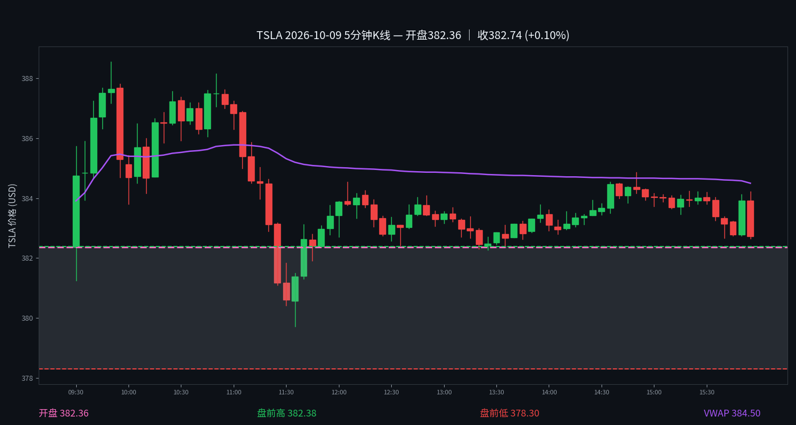
开盘 382.36 ｜ 最高 387.17 ｜ 最低 380.60 ｜ 收盘 382.74 (+0.10%)
盘前高 382.38 ｜ 盘前低 378.30
VWAP 384.50
注：本日无 heatmap 快照（数据已过期），无 flow 数据（YHS 仅保留近期）。K 线为 Databento 1 分钟聚合 5 分钟，VWAP 为真实成交量加权。
历史数据库：每日收盘后追加当日报告，历史日期永久保留。
TSLA
2026-10-08 · 周四 · 日内报告
375.02 (+0.16%)
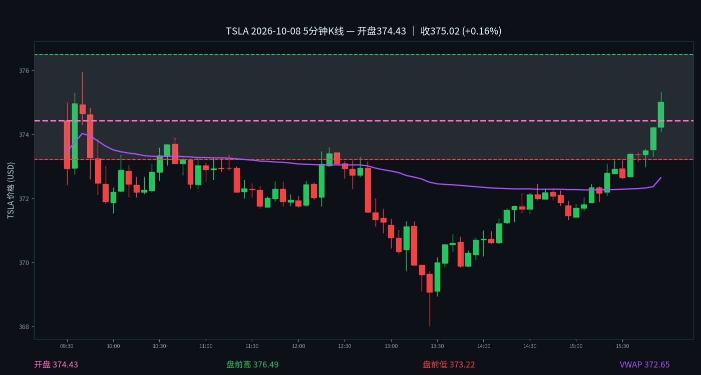
开盘 374.43 ｜ 最高 374.31 ｜ 最低 369.08 ｜ 收盘 375.02 (+0.16%)
盘前高 376.49 ｜ 盘前低 373.22
VWAP 372.65
注：本日无 heatmap 快照（数据已过期），无 flow 数据（YHS 仅保留近期）。K 线为 Databento 1 分钟聚合 5 分钟，VWAP 为真实成交量加权。
历史数据库：每日收盘后追加当日报告，历史日期永久保留。
TSLA
2026-10-07 · 周三 · 日内报告
377.62 (-0.18%)
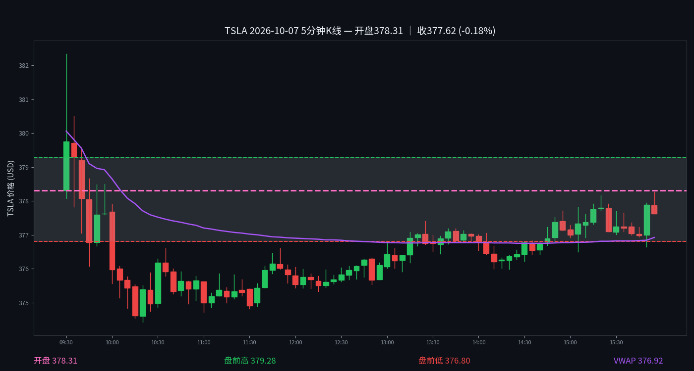
开盘 378.31 ｜ 最高 378.08 ｜ 最低 374.61 ｜ 收盘 377.62 (-0.18%)
盘前高 379.28 ｜ 盘前低 376.80
VWAP 376.92
注：本日无 heatmap 快照（数据已过期），无 flow 数据（YHS 仅保留近期）。K 线为 Databento 1 分钟聚合 5 分钟，VWAP 为真实成交量加权。
历史数据库：每日收盘后追加当日报告，历史日期永久保留。
TSLA
2026-10-06 · 周二 · 日内报告
380.68 (-0.32%)
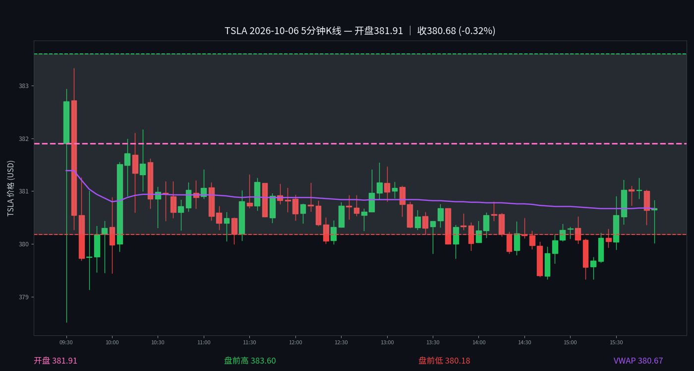
开盘 381.91 ｜ 最高 381.00 ｜ 最低 379.39 ｜ 收盘 380.68 (-0.32%)
盘前高 383.60 ｜ 盘前低 380.18
VWAP 380.67
注：本日无 heatmap 快照（数据已过期），无 flow 数据（YHS 仅保留近期）。K 线为 Databento 1 分钟聚合 5 分钟，VWAP 为真实成交量加权。
历史数据库：每日收盘后追加当日报告，历史日期永久保留。
TSLA
2026-10-05 · 周一 · 日内报告
378.84 (+2.69%)
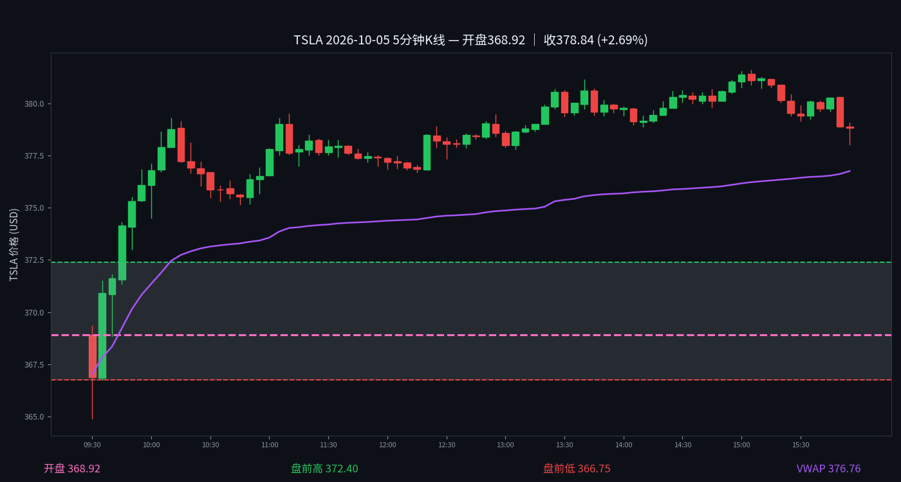
开盘 368.92 ｜ 最高 380.89 ｜ 最低 366.88 ｜ 收盘 378.84 (+2.69%)
盘前高 372.40 ｜ 盘前低 366.75
VWAP 376.76
注：本日无 heatmap 快照（数据已过期），无 flow 数据（YHS 仅保留近期）。K 线为 Databento 1 分钟聚合 5 分钟，VWAP 为真实成交量加权。
历史数据库：每日收盘后追加当日报告，历史日期永久保留。
TSLA
2026-10-02 · 周五 · 日内报告
370.70 (+2.97%)
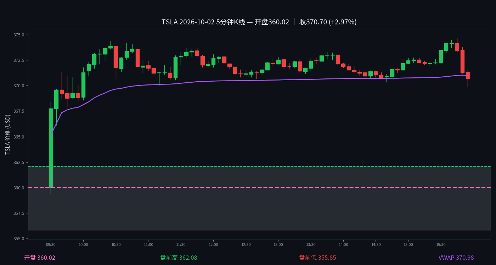
开盘 360.02 ｜ 最高 373.76 ｜ 最低 367.74 ｜ 收盘 370.70 (+2.97%)
盘前高 362.08 ｜ 盘前低 355.85
VWAP 370.98
注：本日无 heatmap 快照（数据已过期），无 flow 数据（YHS 仅保留近期）。K 线为 Databento 1 分钟聚合 5 分钟，VWAP 为真实成交量加权。
历史数据库：每日收盘后追加当日报告，历史日期永久保留。
TSLA
2026-10-01 · 周四 · 日内报告
354.11 (-0.70%)
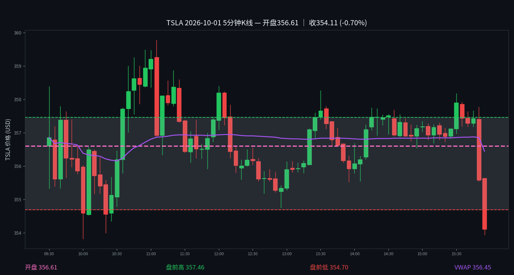
开盘 356.61 ｜ 最高 358.38 ｜ 最低 354.11 ｜ 收盘 354.11 (-0.70%)
盘前高 357.46 ｜ 盘前低 354.70
VWAP 356.45
注：本日无 heatmap 快照（数据已过期），无 flow 数据（YHS 仅保留近期）。K 线为 Databento 1 分钟聚合 5 分钟，VWAP 为真实成交量加权。
历史数据库：每日收盘后追加当日报告，历史日期永久保留。
TSLA
2026-09-30 · 周三 · 日内报告
354.90 (+0.82%)
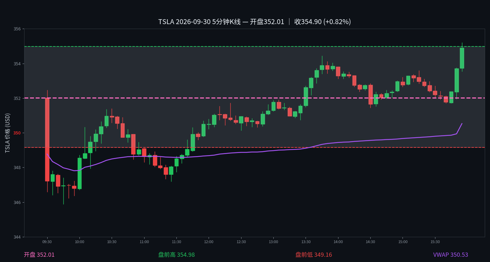
开盘 352.01 ｜ 最高 353.58 ｜ 最低 346.80 ｜ 收盘 354.90 (+0.82%)
盘前高 354.98 ｜ 盘前低 349.16
VWAP 350.53
注：本日无 heatmap 快照（数据已过期），无 flow 数据（YHS 仅保留近期）。K 线为 Databento 1 分钟聚合 5 分钟，VWAP 为真实成交量加权。
历史数据库：每日收盘后追加当日报告，历史日期永久保留。
TSLA
2026-09-29 · 周二 · 日内报告
352.90 (-1.53%)
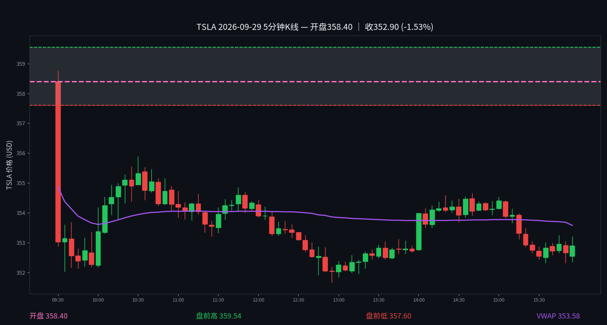
开盘 358.40 ｜ 最高 354.94 ｜ 最低 352.04 ｜ 收盘 352.90 (-1.53%)
盘前高 359.54 ｜ 盘前低 357.60
VWAP 353.58
注：本日无 heatmap 快照（数据已过期），无 flow 数据（YHS 仅保留近期）。K 线为 Databento 1 分钟聚合 5 分钟，VWAP 为真实成交量加权。
历史数据库：每日收盘后追加当日报告，历史日期永久保留。
TSLA
2026-09-28 · 周一 · 日内报告
357.38 (-2.91%)
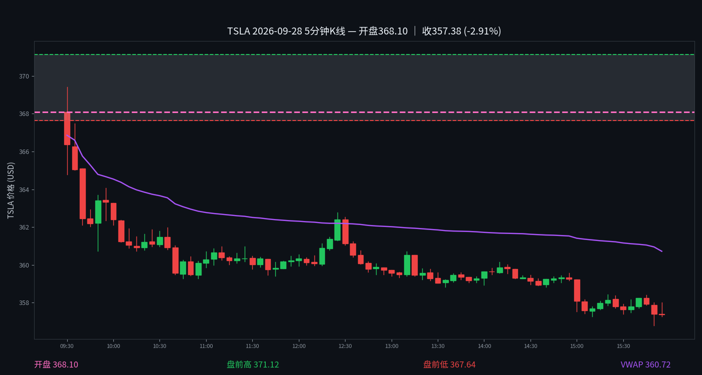
开盘 368.10 ｜ 最高 365.02 ｜ 最低 357.38 ｜ 收盘 357.38 (-2.91%)
盘前高 371.12 ｜ 盘前低 367.64
VWAP 360.72
注：本日无 heatmap 快照（数据已过期），无 flow 数据（YHS 仅保留近期）。K 线为 Databento 1 分钟聚合 5 分钟，VWAP 为真实成交量加权。
历史数据库：每日收盘后追加当日报告，历史日期永久保留。
TSLA
2026-09-25 · 周五 · 日内报告
372.07 (-3.21%)
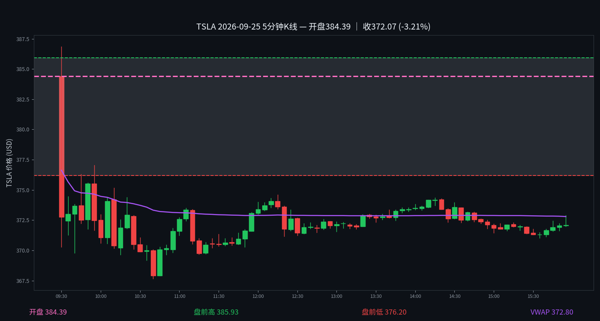
开盘 384.39 ｜ 最高 373.71 ｜ 最低 367.92 ｜ 收盘 372.07 (-3.21%)
盘前高 385.93 ｜ 盘前低 376.20
VWAP 372.80
注：本日无 heatmap 快照（数据已过期），无 flow 数据（YHS 仅保留近期）。K 线为 Databento 1 分钟聚合 5 分钟，VWAP 为真实成交量加权。
历史数据库：每日收盘后追加当日报告，历史日期永久保留。
TSLA
2026-09-24 · 周四 · 日内报告
377.91 (+0.07%)
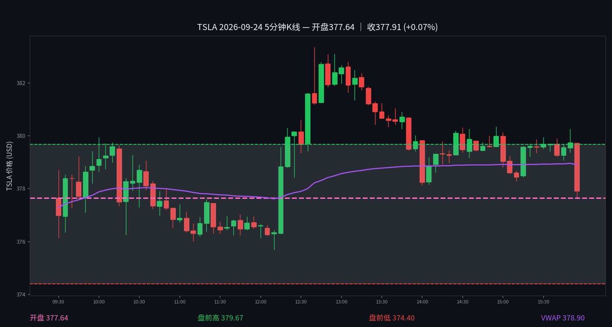
开盘 377.64 ｜ 最高 381.97 ｜ 最低 376.26 ｜ 收盘 377.91 (+0.07%)
盘前高 379.67 ｜ 盘前低 374.40
VWAP 378.90
注：本日无 heatmap 快照（数据已过期），无 flow 数据（YHS 仅保留近期）。K 线为 Databento 1 分钟聚合 5 分钟，VWAP 为真实成交量加权。
历史数据库：每日收盘后追加当日报告，历史日期永久保留。
TSLA
2026-09-23 · 周三 · 日内报告
380.25 (+0.09%)
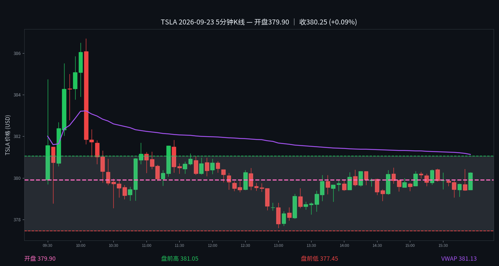
开盘 379.90 ｜ 最高 383.93 ｜ 最低 377.79 ｜ 收盘 380.25 (+0.09%)
盘前高 381.05 ｜ 盘前低 377.45
VWAP 381.13
注：本日无 heatmap 快照（数据已过期），无 flow 数据（YHS 仅保留近期）。K 线为 Databento 1 分钟聚合 5 分钟，VWAP 为真实成交量加权。
历史数据库：每日收盘后追加当日报告，历史日期永久保留。
TSLA
2026-09-22 · 周二 · 日内报告
378.84 (-0.04%)
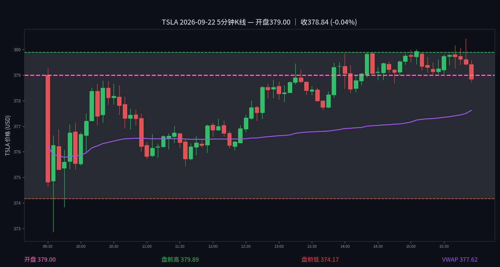
开盘 379.00 ｜ 最高 379.51 ｜ 最低 374.83 ｜ 收盘 378.84 (-0.04%)
盘前高 379.89 ｜ 盘前低 374.17
VWAP 377.62
注：本日无 heatmap 快照（数据已过期），无 flow 数据（YHS 仅保留近期）。K 线为 Databento 1 分钟聚合 5 分钟，VWAP 为真实成交量加权。
历史数据库：每日收盘后追加当日报告，历史日期永久保留。
TSLA
2026-09-21 · 周一 · 日内报告
375.28 (+0.99%)
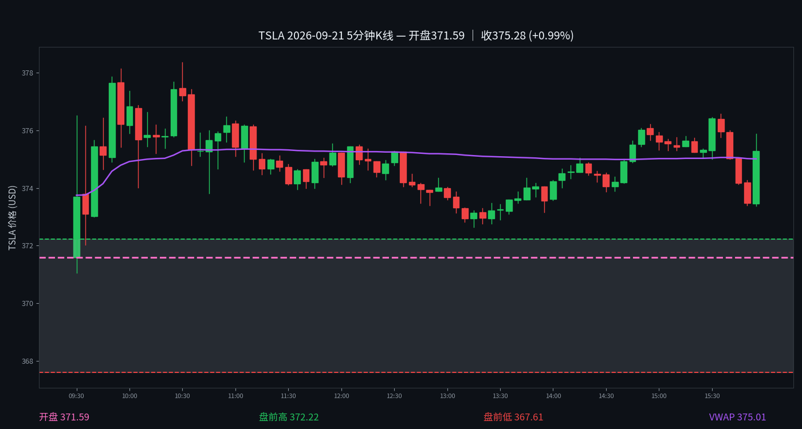
开盘 371.59 ｜ 最高 377.02 ｜ 最低 372.94 ｜ 收盘 375.28 (+0.99%)
盘前高 372.22 ｜ 盘前低 367.61
VWAP 375.01
注：本日无 heatmap 快照（数据已过期），无 flow 数据（YHS 仅保留近期）。K 线为 Databento 1 分钟聚合 5 分钟，VWAP 为真实成交量加权。
历史数据库：每日收盘后追加当日报告，历史日期永久保留。
TSLA
2026-09-18 · 周五 · 日内报告
364.22 (-1.37%)
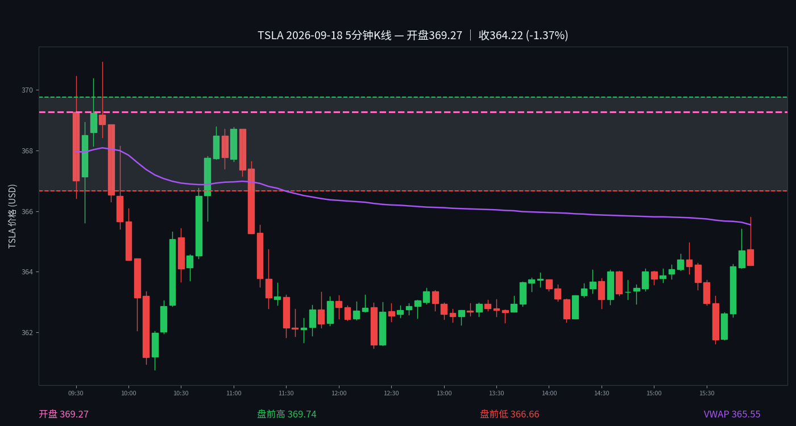
开盘 369.27 ｜ 最高 368.42 ｜ 最低 361.18 ｜ 收盘 364.22 (-1.37%)
盘前高 369.74 ｜ 盘前低 366.66
VWAP 365.55
注：本日无 heatmap 快照（数据已过期），无 flow 数据（YHS 仅保留近期）。K 线为 Databento 1 分钟聚合 5 分钟，VWAP 为真实成交量加权。
历史数据库：每日收盘后追加当日报告，历史日期永久保留。
TSLA
2026-09-17 · 周四 · 日内报告
366.04 (-0.44%)
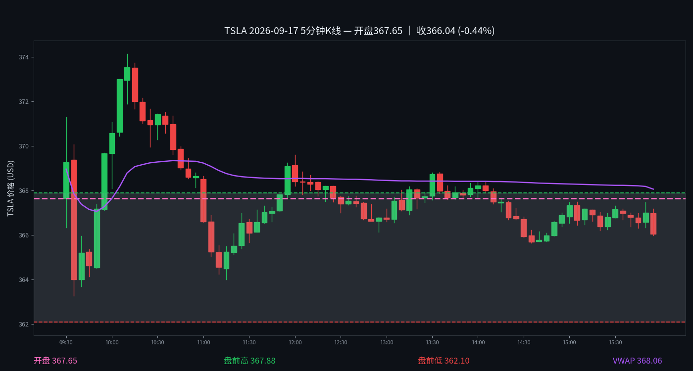
开盘 367.65 ｜ 最高 371.89 ｜ 最低 364.00 ｜ 收盘 366.04 (-0.44%)
盘前高 367.88 ｜ 盘前低 362.10
VWAP 368.06
注：本日无 heatmap 快照（数据已过期），无 flow 数据（YHS 仅保留近期）。K 线为 Databento 1 分钟聚合 5 分钟，VWAP 为真实成交量加权。
历史数据库：每日收盘后追加当日报告，历史日期永久保留。
TSLA
2026-09-16 · 周三 · 日内报告
358.13 (+0.08%)
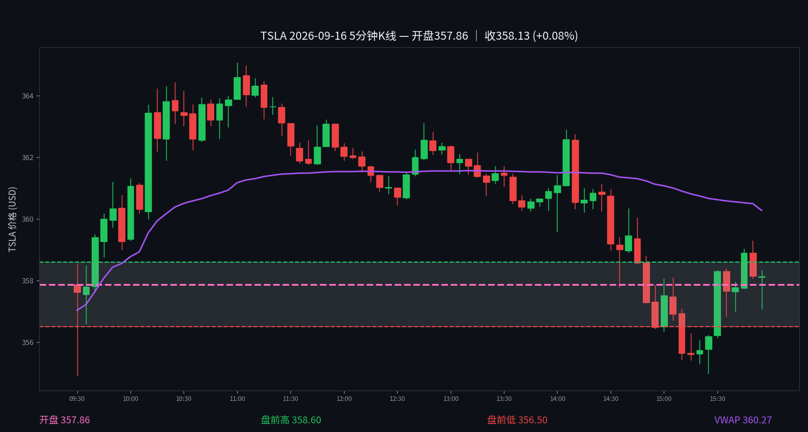
开盘 357.86 ｜ 最高 363.95 ｜ 最低 355.61 ｜ 收盘 358.13 (+0.08%)
盘前高 358.60 ｜ 盘前低 356.50
VWAP 360.27
注：本日无 heatmap 快照（数据已过期），无 flow 数据（YHS 仅保留近期）。K 线为 Databento 1 分钟聚合 5 分钟，VWAP 为真实成交量加权。
历史数据库：每日收盘后追加当日报告，历史日期永久保留。
TSLA
2026-09-15 · 周二 · 日内报告
356.64 (-0.58%)
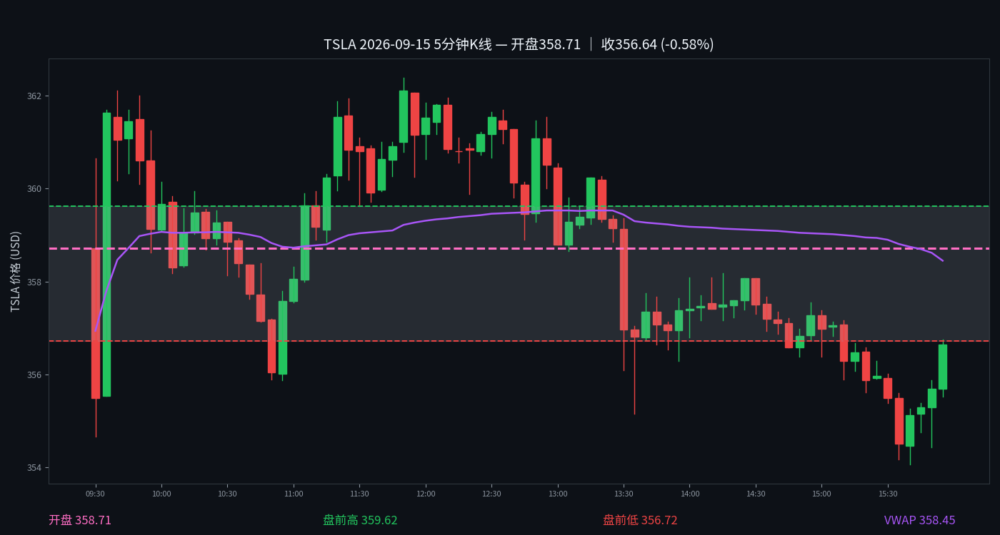
开盘 358.71 ｜ 最高 361.18 ｜ 最低 354.51 ｜ 收盘 356.64 (-0.58%)
盘前高 359.62 ｜ 盘前低 356.72
VWAP 358.45
注：本日无 heatmap 快照（数据已过期），无 flow 数据（YHS 仅保留近期）。K 线为 Databento 1 分钟聚合 5 分钟，VWAP 为真实成交量加权。
历史数据库：每日收盘后追加当日报告，历史日期永久保留。
TSLA
2026-09-14 · 周一 · 日内报告
358.97 (-0.21%)
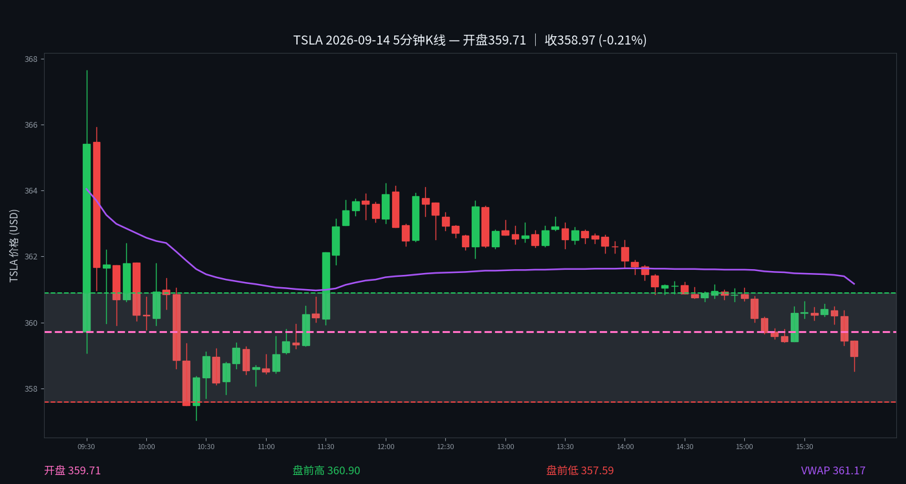
开盘 359.71 ｜ 最高 363.24 ｜ 最低 357.49 ｜ 收盘 358.97 (-0.21%)
盘前高 360.90 ｜ 盘前低 357.59
VWAP 361.17
注：本日无 heatmap 快照（数据已过期），无 flow 数据（YHS 仅保留近期）。K 线为 Databento 1 分钟聚合 5 分钟，VWAP 为真实成交量加权。
历史数据库：每日收盘后追加当日报告，历史日期永久保留。
TSLA
2026-09-11 · 周五 · 日内报告
365.47 (+0.33%)
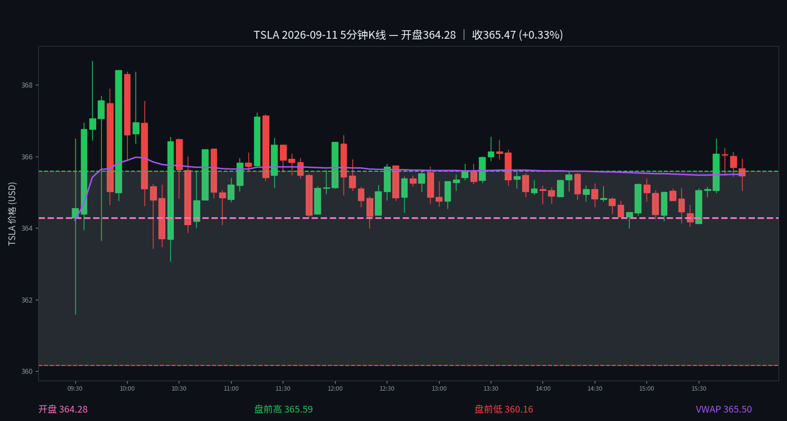
开盘 364.28 ｜ 最高 366.47 ｜ 最低 363.70 ｜ 收盘 365.47 (+0.33%)
盘前高 365.59 ｜ 盘前低 360.16
VWAP 365.50
注：本日无 heatmap 快照（数据已过期），无 flow 数据（YHS 仅保留近期）。K 线为 Databento 1 分钟聚合 5 分钟，VWAP 为真实成交量加权。
历史数据库：每日收盘后追加当日报告，历史日期永久保留。
TSLA
2026-09-10 · 周四 · 日内报告
363.61 (+0.89%)
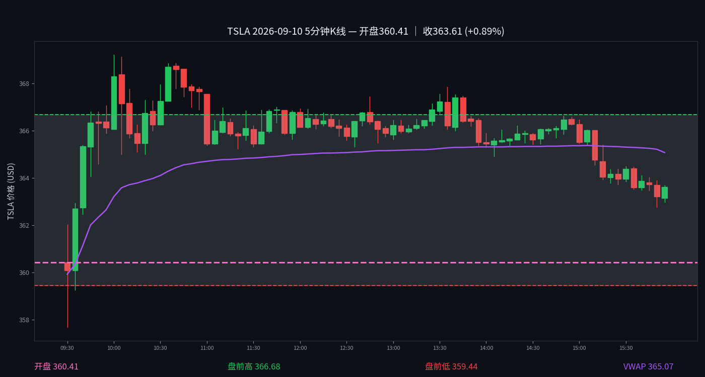
开盘 360.41 ｜ 最高 367.78 ｜ 最低 360.08 ｜ 收盘 363.61 (+0.89%)
盘前高 366.68 ｜ 盘前低 359.44
VWAP 365.07
注：本日无 heatmap 快照（数据已过期），无 flow 数据（YHS 仅保留近期）。K 线为 Databento 1 分钟聚合 5 分钟，VWAP 为真实成交量加权。
历史数据库：每日收盘后追加当日报告，历史日期永久保留。
TSLA
2026-09-09 · 周三 · 日内报告
367.80 (-0.16%)
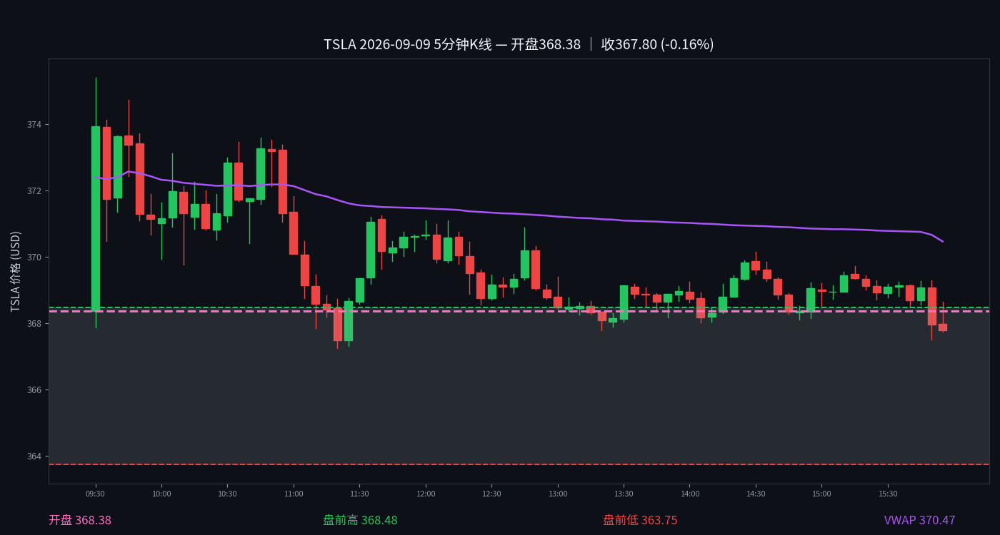
开盘 368.38 ｜ 最高 372.44 ｜ 最低 367.49 ｜ 收盘 367.80 (-0.16%)
盘前高 368.48 ｜ 盘前低 363.75
VWAP 370.47
注：本日无 heatmap 快照（数据已过期），无 flow 数据（YHS 仅保留近期）。K 线为 Databento 1 分钟聚合 5 分钟，VWAP 为真实成交量加权。
历史数据库：每日收盘后追加当日报告，历史日期永久保留。
TSLA
2026-09-08 · 周二 · 日内报告
368.04 (+3.02%)
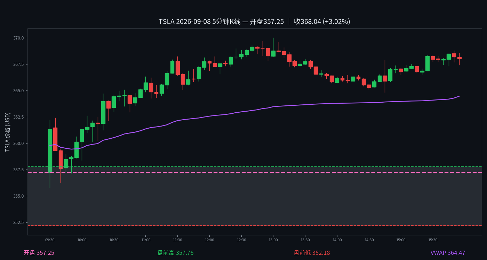
开盘 357.25 ｜ 最高 368.70 ｜ 最低 357.57 ｜ 收盘 368.04 (+3.02%)
盘前高 357.76 ｜ 盘前低 352.18
VWAP 364.47
注：本日无 heatmap 快照（数据已过期），无 flow 数据（YHS 仅保留近期）。K 线为 Databento 1 分钟聚合 5 分钟，VWAP 为真实成交量加权。
历史数据库：每日收盘后追加当日报告，历史日期永久保留。
TSLA
2026-09-04 · 周五 · 日内报告
353.91 (-2.22%)
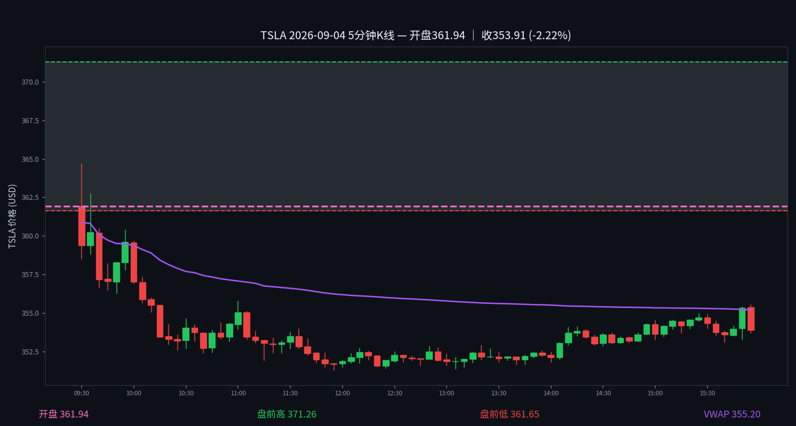
开盘 361.94 ｜ 最高 358.84 ｜ 最低 351.60 ｜ 收盘 353.91 (-2.22%)
盘前高 371.26 ｜ 盘前低 361.65
VWAP 355.20
注：本日无 heatmap 快照（数据已过期），无 flow 数据（YHS 仅保留近期）。K 线为 Databento 1 分钟聚合 5 分钟，VWAP 为真实成交量加权。
历史数据库：每日收盘后追加当日报告，历史日期永久保留。
TSLA
2026-09-03 · 周四 · 日内报告
376.41 (+2.88%)
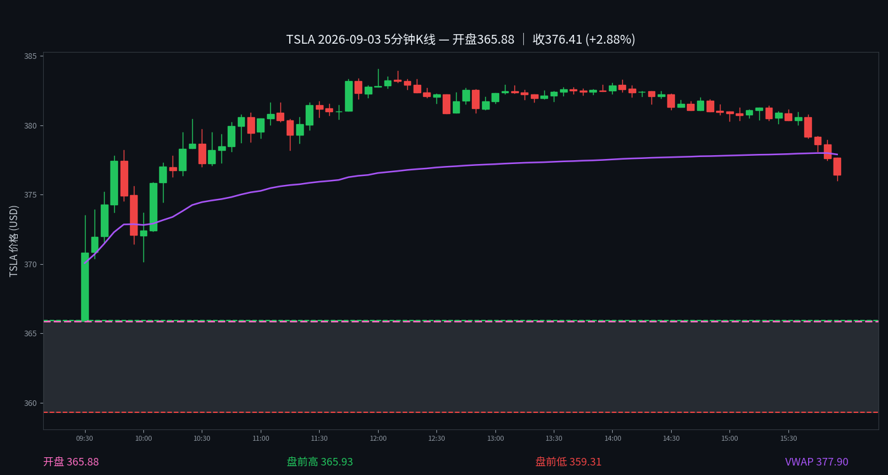
开盘 365.88 ｜ 最高 383.12 ｜ 最低 370.80 ｜ 收盘 376.41 (+2.88%)
盘前高 365.93 ｜ 盘前低 359.31
VWAP 377.90
注：本日无 heatmap 快照（数据已过期），无 flow 数据（YHS 仅保留近期）。K 线为 Databento 1 分钟聚合 5 分钟，VWAP 为真实成交量加权。
历史数据库：每日收盘后追加当日报告，历史日期永久保留。
TSLA
2026-09-02 · 周三 · 日内报告
356.99 (-1.00%)
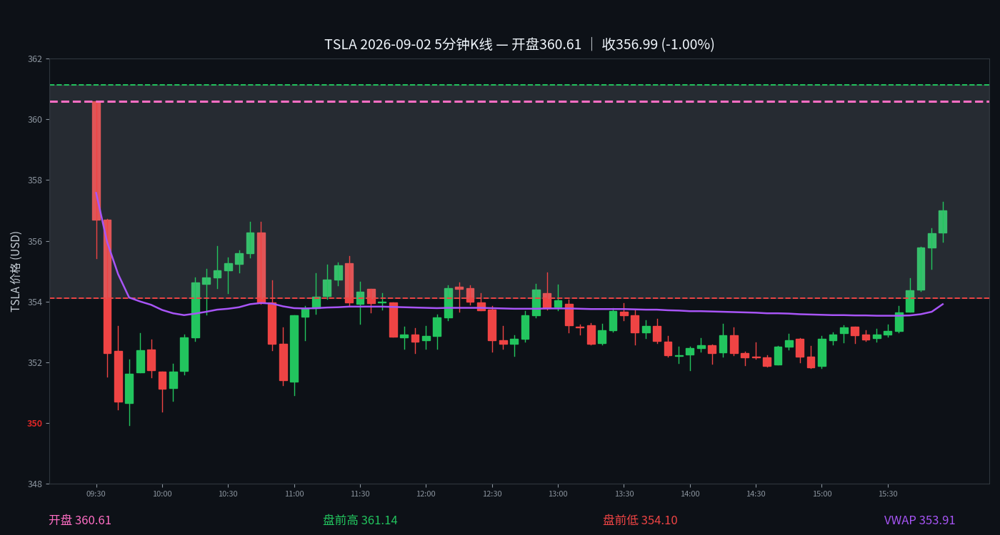
开盘 360.61 ｜ 最高 355.96 ｜ 最低 350.71 ｜ 收盘 356.99 (-1.00%)
盘前高 361.14 ｜ 盘前低 354.10
VWAP 353.91
注：本日无 heatmap 快照（数据已过期），无 flow 数据（YHS 仅保留近期）。K 线为 Databento 1 分钟聚合 5 分钟，VWAP 为真实成交量加权。
历史数据库：每日收盘后追加当日报告，历史日期永久保留。
TSLA
2026-09-01 · 周二 · 日内报告
356.08 (-1.34%)
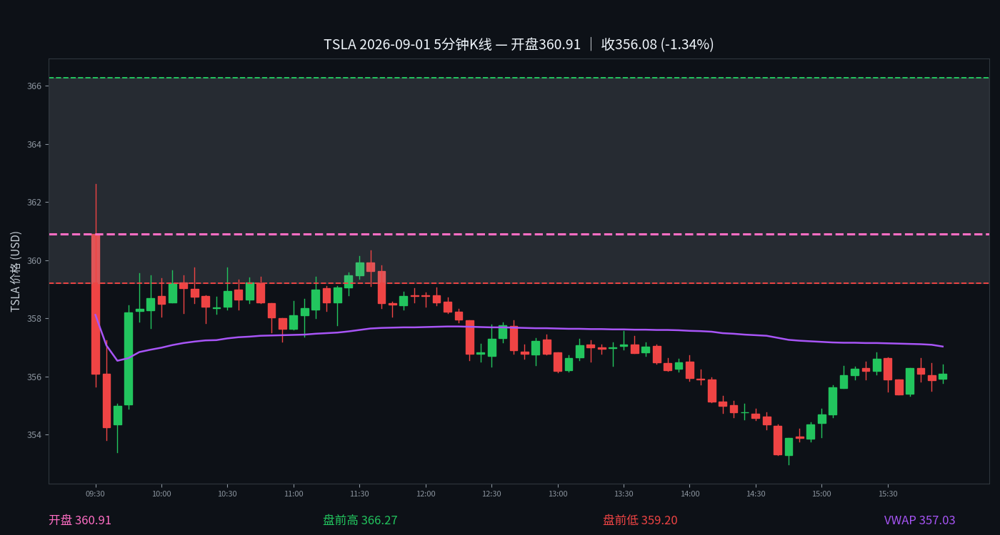
开盘 360.91 ｜ 最高 359.36 ｜ 最低 353.32 ｜ 收盘 356.08 (-1.34%)
盘前高 366.27 ｜ 盘前低 359.20
VWAP 357.03
注：本日无 heatmap 快照（数据已过期），无 flow 数据（YHS 仅保留近期）。K 线为 Databento 1 分钟聚合 5 分钟，VWAP 为真实成交量加权。
历史数据库：每日收盘后追加当日报告，历史日期永久保留。
TSLA
2026-08-31 · 周一 · 日内报告
367.92 (+5.97%)
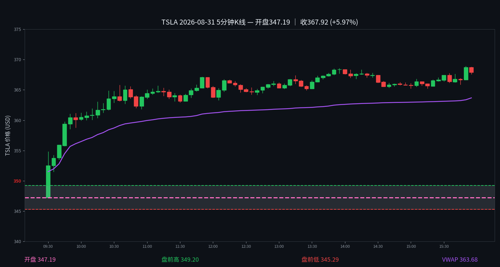
开盘 347.19 ｜ 最高 367.72 ｜ 最低 352.48 ｜ 收盘 367.92 (+5.97%)
盘前高 349.20 ｜ 盘前低 345.29
VWAP 363.68
注：本日无 heatmap 快照（数据已过期），无 flow 数据（YHS 仅保留近期）。K 线为 Databento 1 分钟聚合 5 分钟，VWAP 为真实成交量加权。
历史数据库：每日收盘后追加当日报告，历史日期永久保留。
TSLA
2026-08-28 · 周五 · 日内报告
348.76 (-2.31%)
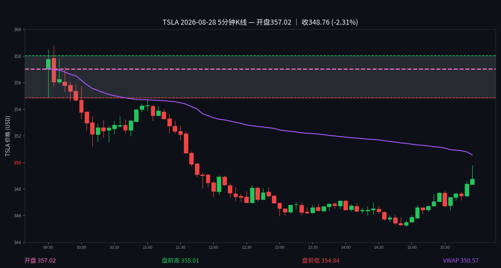
开盘 357.02 ｜ 最高 355.96 ｜ 最低 345.30 ｜ 收盘 348.76 (-2.31%)
盘前高 358.01 ｜ 盘前低 354.84
VWAP 350.57
注：本日无 heatmap 快照（数据已过期），无 flow 数据（YHS 仅保留近期）。K 线为 Databento 1 分钟聚合 5 分钟，VWAP 为真实成交量加权。
历史数据库：每日收盘后追加当日报告，历史日期永久保留。
TSLA
2026-08-27 · 周四 · 日内报告
354.59 (+2.40%)
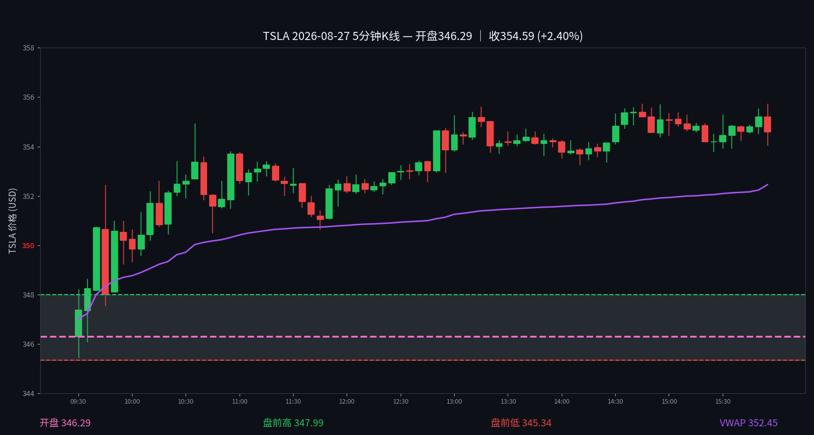
开盘 346.29 ｜ 最高 355.20 ｜ 最低 347.37 ｜ 收盘 354.59 (+2.40%)
盘前高 347.99 ｜ 盘前低 345.34
VWAP 352.45
注：本日无 heatmap 快照（数据已过期），无 flow 数据（YHS 仅保留近期）。K 线为 Databento 1 分钟聚合 5 分钟，VWAP 为真实成交量加权。
历史数据库：每日收盘后追加当日报告，历史日期永久保留。
TSLA
2026-08-26 · 周三 · 日内报告
345.88 (+0.17%)
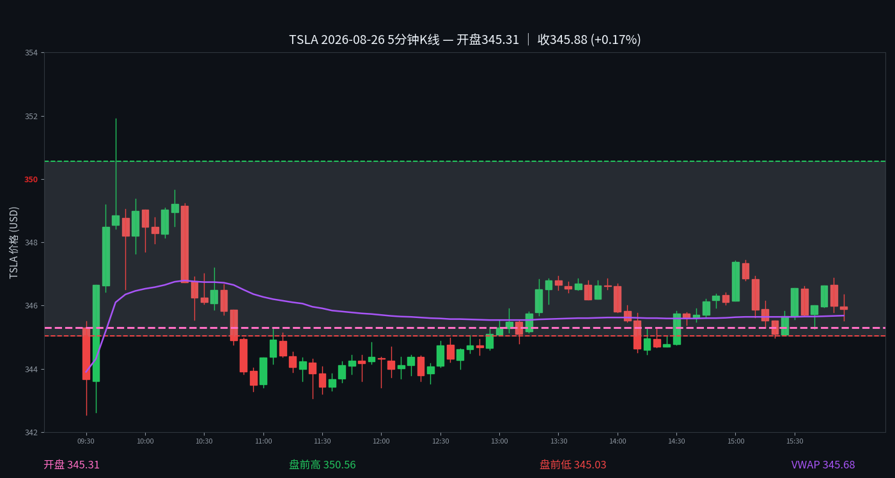
开盘 345.31 ｜ 最高 348.50 ｜ 最低 343.43 ｜ 收盘 345.88 (+0.17%)
盘前高 350.56 ｜ 盘前低 345.03
VWAP 345.68
注：本日无 heatmap 快照（数据已过期），无 flow 数据（YHS 仅保留近期）。K 线为 Databento 1 分钟聚合 5 分钟，VWAP 为真实成交量加权。
历史数据库：每日收盘后追加当日报告，历史日期永久保留。
TSLA
2026-08-25 · 周二 · 日内报告
350.14 (+0.16%)
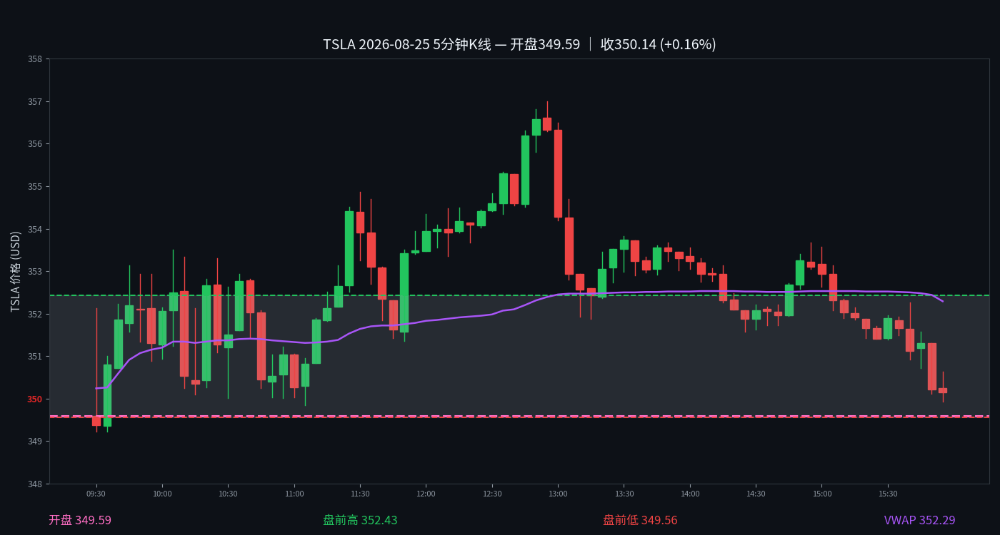
开盘 349.59 ｜ 最高 356.30 ｜ 最低 349.37 ｜ 收盘 350.14 (+0.16%)
盘前高 352.43 ｜ 盘前低 349.56
VWAP 352.29
注：本日无 heatmap 快照（数据已过期），无 flow 数据（YHS 仅保留近期）。K 线为 Databento 1 分钟聚合 5 分钟，VWAP 为真实成交量加权。
历史数据库：每日收盘后追加当日报告，历史日期永久保留。
TSLA
2026-08-24 · 周一 · 日内报告
348.94 (-3.52%)
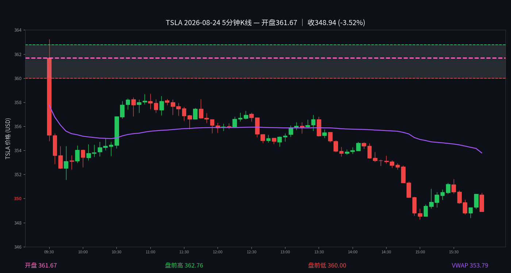
开盘 361.67 ｜ 最高 357.85 ｜ 最低 348.52 ｜ 收盘 348.94 (-3.52%)
盘前高 362.76 ｜ 盘前低 360.00
VWAP 353.79
注：本日无 heatmap 快照（数据已过期），无 flow 数据（YHS 仅保留近期）。K 线为 Databento 1 分钟聚合 5 分钟，VWAP 为真实成交量加权。
历史数据库：每日收盘后追加当日报告，历史日期永久保留。
TSLA
2026-08-21 · 周五 · 日内报告
362.88 (+3.71%)
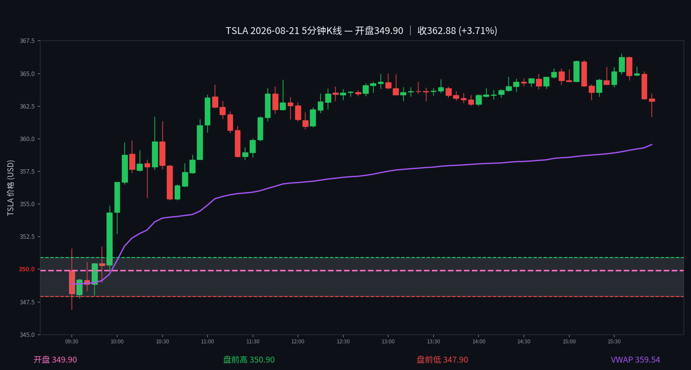
开盘 349.90 ｜ 最高 364.94 ｜ 最低 348.14 ｜ 收盘 362.88 (+3.71%)
盘前高 350.90 ｜ 盘前低 347.90
VWAP 359.54
注：本日无 heatmap 快照（数据已过期），无 flow 数据（YHS 仅保留近期）。K 线为 Databento 1 分钟聚合 5 分钟，VWAP 为真实成交量加权。
历史数据库：每日收盘后追加当日报告，历史日期永久保留。
TSLA
2026-08-20 · 周四 · 日内报告
345.28 (-0.27%)
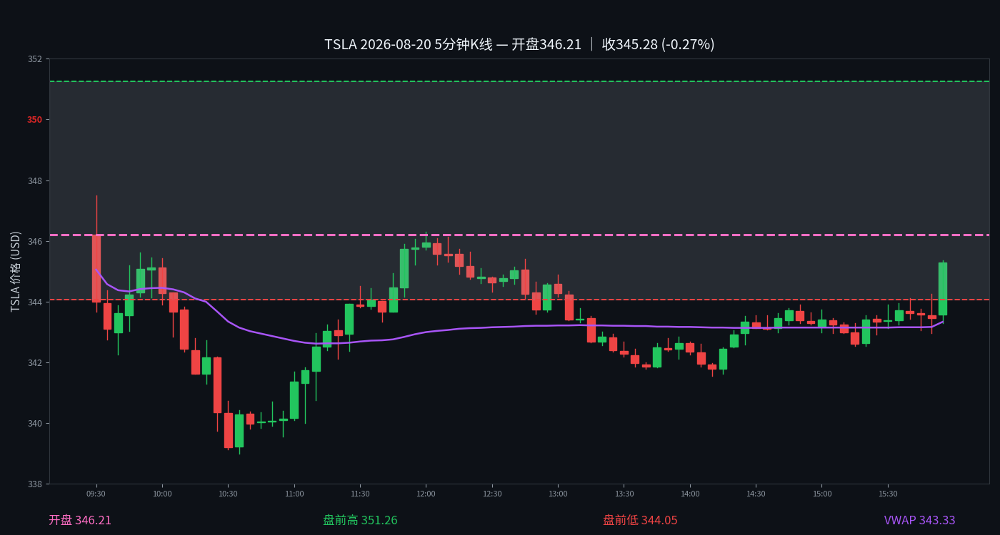
开盘 346.21 ｜ 最高 345.71 ｜ 最低 339.20 ｜ 收盘 345.28 (-0.27%)
盘前高 351.26 ｜ 盘前低 344.05
VWAP 343.33
注：本日无 heatmap 快照（数据已过期），无 flow 数据（YHS 仅保留近期）。K 线为 Databento 1 分钟聚合 5 分钟，VWAP 为真实成交量加权。
历史数据库：每日收盘后追加当日报告，历史日期永久保留。
TSLA
2026-08-19 · 周三 · 日内报告
351.19 (+3.61%)
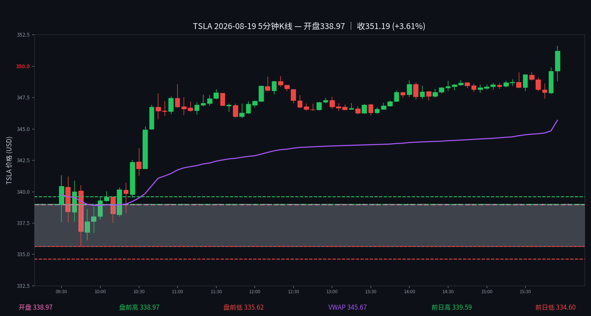
开盘 338.97 ｜ 最高 348.89 ｜ 最低 336.84 ｜ 收盘 351.19 (+3.61%)
盘前高 338.97 ｜ 盘前低 335.62
VWAP 345.67
注：本日无 heatmap 快照（数据已过期），无 flow 数据（YHS 仅保留近期）。K 线为 Databento 1 分钟聚合 5 分钟，VWAP 为真实成交量加权。
历史数据库：每日收盘后追加当日报告，历史日期永久保留。
TSLA
2026-08-18 · 周二 · 日内报告
336.84 (+1.10%)
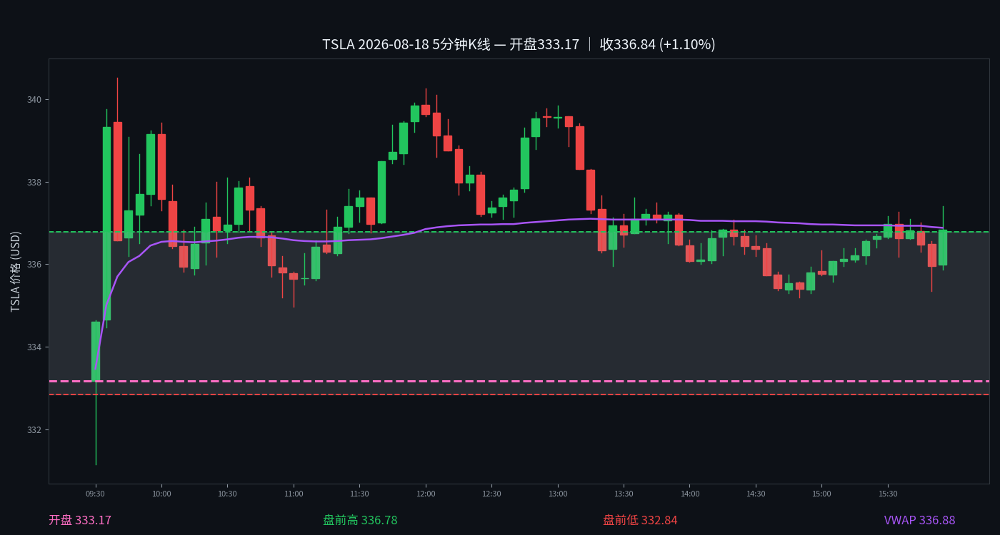
开盘 333.17 ｜ 最高 339.59 ｜ 最低 334.60 ｜ 收盘 336.84 (+1.10%)
盘前高 336.78 ｜ 盘前低 332.84
VWAP 336.88
注：本日无 heatmap 快照（数据已过期），无 flow 数据（YHS 仅保留近期）。K 线为 Databento 1 分钟聚合 5 分钟，VWAP 为真实成交量加权。
历史数据库：每日收盘后追加当日报告，历史日期永久保留。
TSLA
2026-08-17 · 周一 · 日内报告
339.30 (-0.43%)
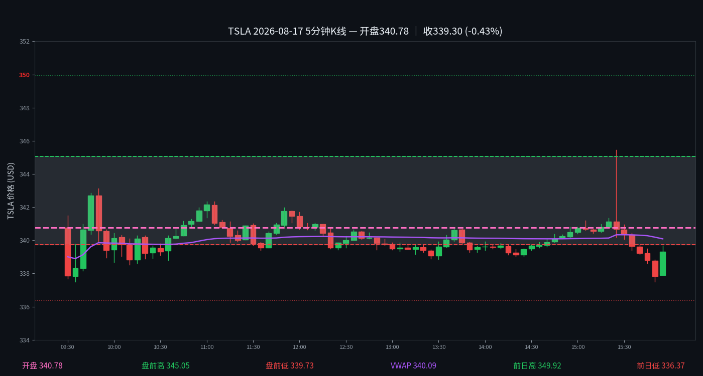
开盘 340.78 ｜ 最高 341.37 ｜ 最低 337.84 ｜ 收盘 339.30 (-0.43%)
盘前高 345.05 ｜ 盘前低 339.73
VWAP 340.09
注：本日无 heatmap 快照（数据已过期），无 flow 数据（YHS 仅保留近期）。K 线为 Databento 1 分钟聚合 5 分钟，VWAP 为真实成交量加权。
历史数据库：每日收盘后追加当日报告，历史日期永久保留。
TSLA
2026-08-14 · 周五 · 日内报告
342.27 (-0.02%)
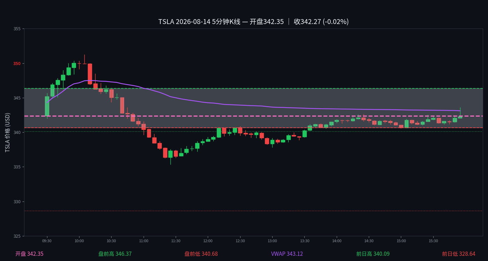
开盘 342.35 ｜ 最高 349.92 ｜ 最低 336.37 ｜ 收盘 342.27 (-0.02%)
盘前高 346.37 ｜ 盘前低 340.68
VWAP 343.12
注：本日无 heatmap 快照（数据已过期），无 flow 数据（YHS 仅保留近期）。K 线为 Databento 1 分钟聚合 5 分钟，VWAP 为真实成交量加权。
历史数据库：每日收盘后追加当日报告，历史日期永久保留。
TSLA
2026-08-13 · 周四 · 日内报告
340.04 (+3.96%)
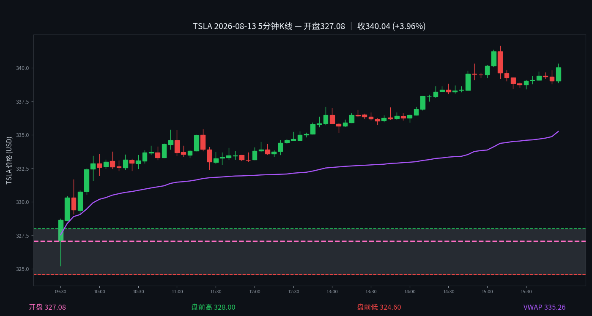
开盘 327.08 ｜ 最高 340.09 ｜ 最低 328.64 ｜ 收盘 340.04 (+3.96%)
盘前高 328.00 ｜ 盘前低 324.60
VWAP 335.26
注：本日无 heatmap 快照（数据已过期），无 flow 数据（YHS 仅保留近期）。K 线为 Databento 1 分钟聚合 5 分钟，VWAP 为真实成交量加权。
历史数据库：每日收盘后追加当日报告，历史日期永久保留。
TSLA
2026-08-12 · 周三 · 日内报告
327.45 (-2.30%)
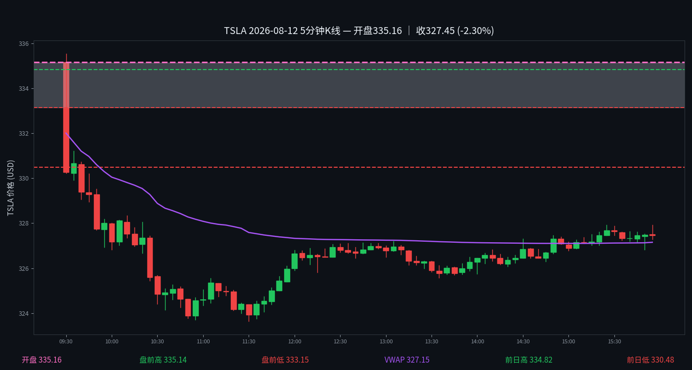
开盘 335.16 ｜ 最高 330.23 ｜ 最低 323.89 ｜ 收盘 327.45 (-2.30%)
盘前高 335.14 ｜ 盘前低 333.15
VWAP 327.15
注：本日无 heatmap 快照（数据已过期），无 flow 数据（YHS 仅保留近期）。K 线为 Databento 1 分钟聚合 5 分钟，VWAP 为真实成交量加权。
历史数据库：每日收盘后追加当日报告，历史日期永久保留。
TSLA
2026-08-11 · 周二 · 日内报告
332.80 (+0.00%)
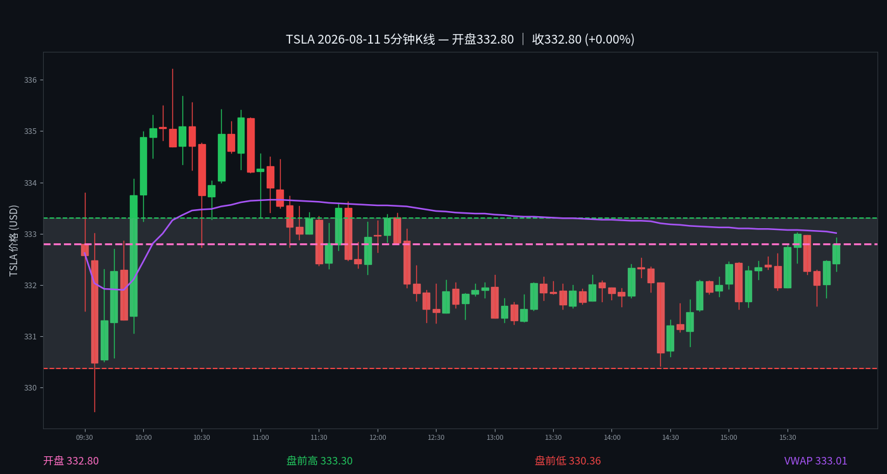
开盘 332.80 ｜ 最高 334.82 ｜ 最低 330.48 ｜ 收盘 332.80 (+0.00%)
盘前高 333.30 ｜ 盘前低 330.36
VWAP 333.01
注：本日无 heatmap 快照（数据已过期），无 flow 数据（YHS 仅保留近期）。K 线为 Databento 1 分钟聚合 5 分钟，VWAP 为真实成交量加权。
历史数据库：每日收盘后追加当日报告，历史日期永久保留。
TSLA
2026-08-10 · 周一 · 日内报告
330.88 (+1.28%)
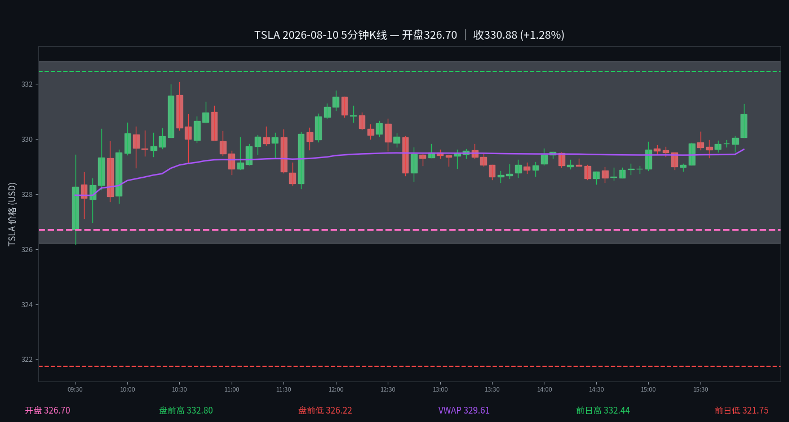
开盘 326.70 ｜ 最高 331.03 ｜ 最低 327.85 ｜ 收盘 330.88 (+1.28%)
盘前高 332.80 ｜ 盘前低 326.22
VWAP 329.61
注：本日无 heatmap 快照（数据已过期），无 flow 数据（YHS 仅保留近期）。K 线为 Databento 1 分钟聚合 5 分钟，VWAP 为真实成交量加权。
历史数据库：每日收盘后追加当日报告，历史日期永久保留。
TSLA
2026-08-07 · 周五 · 日内报告
328.55 (+1.94%)
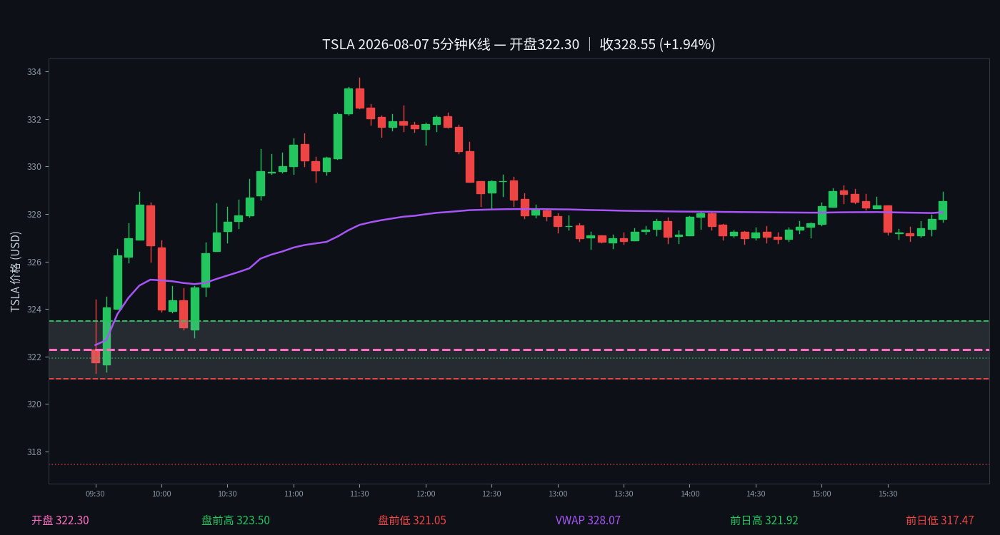
开盘 322.30 ｜ 最高 332.44 ｜ 最低 321.75 ｜ 收盘 328.55 (+1.94%)
盘前高 323.50 ｜ 盘前低 321.05
VWAP 328.07
注：本日无 heatmap 快照（数据已过期），无 flow 数据（YHS 仅保留近期）。K 线为 Databento 1 分钟聚合 5 分钟，VWAP 为真实成交量加权。
历史数据库：每日收盘后追加当日报告，历史日期永久保留。
TSLA
2026-08-06 · 周四 · 日内报告
319.53 (+0.78%)
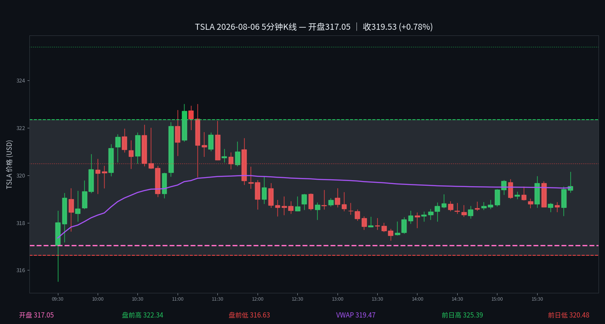
开盘 317.05 ｜ 最高 321.92 ｜ 最低 317.47 ｜ 收盘 319.53 (+0.78%)
盘前高 322.34 ｜ 盘前低 316.63
VWAP 319.47
注：本日无 heatmap 快照（数据已过期），无 flow 数据（YHS 仅保留近期）。K 线为 Databento 1 分钟聚合 5 分钟，VWAP 为真实成交量加权。
历史数据库：每日收盘后追加当日报告，历史日期永久保留。
TSLA
2026-08-05 · 周三 · 日内报告
321.46 (-0.65%)
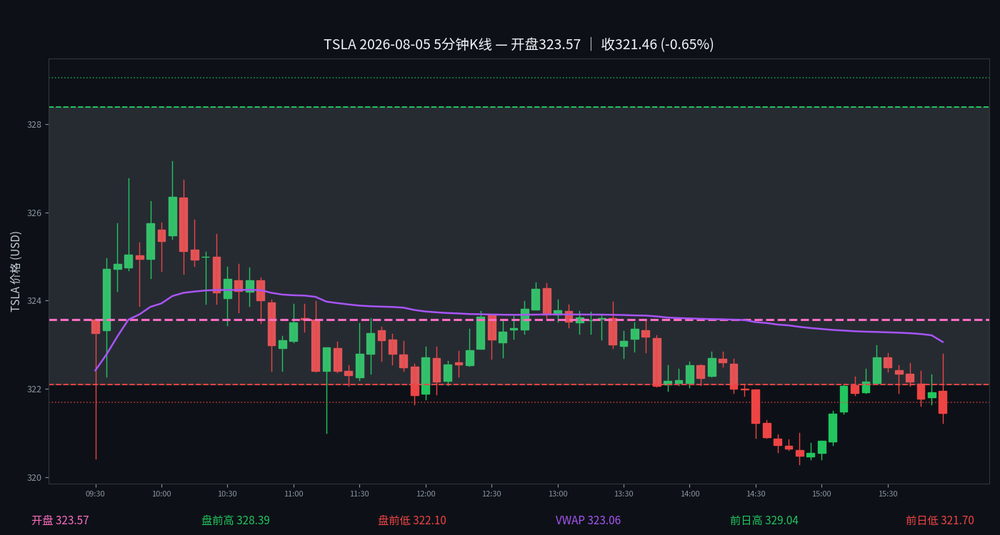
开盘 323.57 ｜ 最高 325.39 ｜ 最低 320.48 ｜ 收盘 321.46 (-0.65%)
盘前高 328.39 ｜ 盘前低 322.10
VWAP 323.06
注：本日无 heatmap 快照（数据已过期），无 flow 数据（YHS 仅保留近期）。K 线为 Databento 1 分钟聚合 5 分钟，VWAP 为真实成交量加权。
历史数据库：每日收盘后追加当日报告，历史日期永久保留。
TSLA
2026-08-04 · 周二 · 日内报告
327.41 (+0.96%)
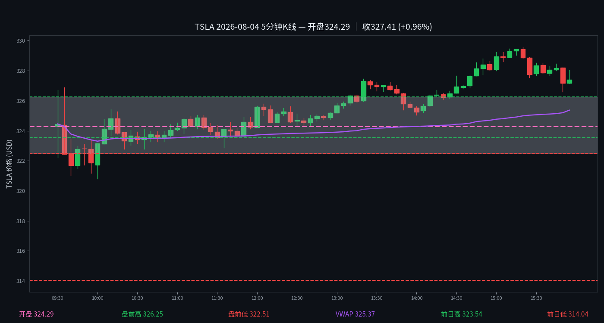
开盘 324.29 ｜ 最高 329.04 ｜ 最低 321.70 ｜ 收盘 327.41 (+0.96%)
盘前高 326.25 ｜ 盘前低 322.51
VWAP 325.37
注：本日无 heatmap 快照（数据已过期），无 flow 数据（YHS 仅保留近期）。K 线为 Databento 1 分钟聚合 5 分钟，VWAP 为真实成交量加权。
历史数据库：每日收盘后追加当日报告，历史日期永久保留。
TSLA
2026-08-03 · 周一 · 日内报告
322.13 (+3.56%)
开盘 311.05 ｜ 最高 323.54 ｜ 最低 314.04 ｜ 收盘 322.13 (+3.56%)
盘前高 315.20 ｜ 盘前低 309.38
VWAP 320.49
注：本日无 heatmap 快照（数据已过期），无 flow 数据（YHS 仅保留近期）。K 线为 Databento 1 分钟聚合 5 分钟，VWAP 为真实成交量加权。
历史数据库：每日收盘后追加当日报告，历史日期永久保留。